lorenz_partial_additive_splitmode_p30_obsnoise005_cayley_autodim_top3nd_v2__lc_obsnoisescale_sweep_20260503T045452Z__stage_bProject: Lorenz_INDpartial_NDsweep_cayley_autodim_D1_NormTrue__JacobianODE
Launched: 2026-05-03T09:35:16Z
Completed: 2026-05-03T18:00:36Z
Outcome: complete_clean
Git: latent-JacobianODE @ 56c7aab
Expected runs: 54
lorenz_partial_additive_splitmode_p30_obsnoise005_cayley_autodim_top3nd_v2__lc_obsnoisescale_sweepDescription
Lorenz partial additive coupling, Cayley + autodim + split-mode + TF-coupled LR. Single observed channel (idx 0), obs_noise=0.05, prediction_steps=30, traj_init_steps=15. 108-run grid: 3 n_delays (chain-pinned) × 9 LC weights × 4 obs_noise_scale values.
Hypothesis
Same noise-injection / LC ramp hypothesis as the prior splitmode obsnoise005 grid, now run under the standard Cayley + autodim recipe end-to-end so the n_delays choice from the scout transfers cleanly.
Success criteria
Swept axes (10): data.train_test_params.delay_embedding_params.n_delays, model.encoder.n_input, model.n_target_dims, model.n_target_dims_pca_auto, model.n_target_dims_pca_cum_var, model.params.input_dim, model.params.output_dim, training.ckpt_path, training.lightning.loop_closure_weight, training.lightning.obs_noise_scale
Chosen run (by best_traj_loss): 0ew7quhf — traj_loss=0.00505, MASE=0.7580, R²=0.9868, LC loss=32.145, epoch=107.0
Swept-axis values at chosen run: data.train_test_params.delay_embedding_params.n_delays=85 · model.encoder.n_input=85 · model.n_target_dims=14 · model.n_target_dims_pca_auto=14 · model.n_target_dims_pca_cum_var=0.990074 · model.params.input_dim=14 · model.params.output_dim=196 · training.ckpt_path=/orcd/data/ekmiller/001/eisenaj/JacobianODE/sweeps/two_stage_ckpts/lorenz_partial_additive_splitmode_p30_obsnoise005_cayley_autodim_top3nd_v2__lc_obsnoisescale_sweep_20260503T045452Z__stage_a/2df04e3fa0fbf3a7/last.ckpt · training.lightning.loop_closure_weight=0 · training.lightning.obs_noise_scale=0
Runs analyzed: 54 (expected 54)
| run_idx | run_id | data.train_test_params.delay_embedding_params.n_delays |
model.encoder.n_input |
model.n_target_dims |
model.n_target_dims_pca_auto |
model.n_target_dims_pca_cum_var |
model.params.input_dim |
model.params.output_dim |
training.ckpt_path |
training.lightning.loop_closure_weight |
training.lightning.obs_noise_scale |
best_traj_loss | best_MASE | R² | LC loss | epoch |
|---|---|---|---|---|---|---|---|---|---|---|---|---|---|---|---|---|
| 7 | 0ew7quhf |
85 | 85 | 14 | 14 | 0.990074 | 14 | 196 | /orcd/data/ekmiller/001/eisenaj/JacobianODE/sweeps/two_stage_ckpts/lorenz_partial_additive_splitmode_p30_obsnoise005_cayley_autodim_top3nd_v2__lc_obsnoisescale_sweep_20260503T045452Z__stage_a/2df04e3fa0fbf3a7/last.ckpt | 0 | 0 | 0.00505 | 0.7580 | 0.9868 | 32.145 | 107.0 |
| 12 | 3u1igjv7 |
85 | 85 | 14 | 14 | 0.990074 | 14 | 196 | /orcd/data/ekmiller/001/eisenaj/JacobianODE/sweeps/two_stage_ckpts/lorenz_partial_additive_splitmode_p30_obsnoise005_cayley_autodim_top3nd_v2__lc_obsnoisescale_sweep_20260503T045452Z__stage_a/387ba3ec7a6fa0c6/last.ckpt | 1.0e-06 | 0 | 0.00513 | 0.7595 | 0.9866 | 12.055 | 104.0 |
| 16 | db6w4w0x |
85 | 85 | 14 | 14 | 0.990074 | 14 | 196 | /orcd/data/ekmiller/001/eisenaj/JacobianODE/sweeps/two_stage_ckpts/lorenz_partial_additive_splitmode_p30_obsnoise005_cayley_autodim_top3nd_v2__lc_obsnoisescale_sweep_20260503T045452Z__stage_a/c869655a88896b02/last.ckpt | 1.0e-05 | 0 | 0.00517 | 0.7654 | 0.9865 | 2.665 | 107.0 |
| 3 | 601fkiof |
75 | 75 | 12 | 12 | 0.990036 | 12 | 144 | /orcd/data/ekmiller/001/eisenaj/JacobianODE/sweeps/two_stage_ckpts/lorenz_partial_additive_splitmode_p30_obsnoise005_cayley_autodim_top3nd_v2__lc_obsnoisescale_sweep_20260503T045452Z__stage_a/f9fac93de95a15de/last.ckpt | 0 | 0 | 0.00526 | 0.7711 | 0.9858 | 28.198 | 108.0 |
| 19 | 50tuf37g |
85 | 85 | 14 | 14 | 0.990074 | 14 | 196 | /orcd/data/ekmiller/001/eisenaj/JacobianODE/sweeps/two_stage_ckpts/lorenz_partial_additive_splitmode_p30_obsnoise005_cayley_autodim_top3nd_v2__lc_obsnoisescale_sweep_20260503T045452Z__stage_a/3d56e5e25c96ace7/last.ckpt | 1.0e-04 | 0 | 0.00534 | 0.7753 | 0.9860 | 0.387 | 104.0 |
| 9 | hm5mu4jp |
75 | 75 | 12 | 12 | 0.990036 | 12 | 144 | /orcd/data/ekmiller/001/eisenaj/JacobianODE/sweeps/two_stage_ckpts/lorenz_partial_additive_splitmode_p30_obsnoise005_cayley_autodim_top3nd_v2__lc_obsnoisescale_sweep_20260503T045452Z__stage_a/a2d21244f6486470/last.ckpt | 1.0e-05 | 0 | 0.00535 | 0.7762 | 0.9855 | 2.593 | 108.0 |
| 28 | vnd51t40 |
65 | 65 | 11 | 11 | 0.990219 | 11 | 121 | /orcd/data/ekmiller/001/eisenaj/JacobianODE/sweeps/two_stage_ckpts/lorenz_partial_additive_splitmode_p30_obsnoise005_cayley_autodim_top3nd_v2__lc_obsnoisescale_sweep_20260503T045452Z__stage_a/d6c534289e80f23e/last.ckpt | 1.0e-04 | 0.003 | 0.00545 | 0.7714 | 0.9855 | 0.712 | 116.0 |
| 4 | bqily7cx |
65 | 65 | 11 | 11 | 0.990219 | 11 | 121 | /orcd/data/ekmiller/001/eisenaj/JacobianODE/sweeps/two_stage_ckpts/lorenz_partial_additive_splitmode_p30_obsnoise005_cayley_autodim_top3nd_v2__lc_obsnoisescale_sweep_20260503T045452Z__stage_a/a078d33b8344f73a/last.ckpt | 1.0e-05 | 0 | 0.00547 | 0.7654 | 0.9854 | 2.241 | 105.0 |
| 22 | 2zpbe6q2 |
75 | 75 | 12 | 12 | 0.990036 | 12 | 144 | /orcd/data/ekmiller/001/eisenaj/JacobianODE/sweeps/two_stage_ckpts/lorenz_partial_additive_splitmode_p30_obsnoise005_cayley_autodim_top3nd_v2__lc_obsnoisescale_sweep_20260503T045452Z__stage_a/4d2c9f4d9533308e/last.ckpt | 1.0e-04 | 0 | 0.00553 | 0.7825 | 0.9850 | 0.386 | 108.0 |
| 2 | 743e81hu |
75 | 75 | 12 | 12 | 0.990036 | 12 | 144 | /orcd/data/ekmiller/001/eisenaj/JacobianODE/sweeps/two_stage_ckpts/lorenz_partial_additive_splitmode_p30_obsnoise005_cayley_autodim_top3nd_v2__lc_obsnoisescale_sweep_20260503T045452Z__stage_a/226028ce880f3e5a/last.ckpt | 1.0e-04 | 0.003 | 0.00562 | 0.7968 | 0.9849 | 2.085 | 127.0 |
| 14 | 1dcg8yzx |
65 | 65 | 11 | 11 | 0.990219 | 11 | 121 | /orcd/data/ekmiller/001/eisenaj/JacobianODE/sweeps/two_stage_ckpts/lorenz_partial_additive_splitmode_p30_obsnoise005_cayley_autodim_top3nd_v2__lc_obsnoisescale_sweep_20260503T045452Z__stage_a/56926cceabd9cb08/last.ckpt | 1.0e-04 | 0 | 0.00563 | 0.7734 | 0.9850 | 0.332 | 124.0 |
| 0 | m268tv5i |
65 | 65 | 11 | 11 | 0.990219 | 11 | 121 | /orcd/data/ekmiller/001/eisenaj/JacobianODE/sweeps/two_stage_ckpts/lorenz_partial_additive_splitmode_p30_obsnoise005_cayley_autodim_top3nd_v2__lc_obsnoisescale_sweep_20260503T045452Z__stage_a/fd66dec68d19e5b7/last.ckpt | 0 | 0 | 0.00573 | 0.7794 | 0.9848 | 18.991 | 75.0 |
| 18 | rpxypp2e |
65 | 65 | 11 | 11 | 0.990219 | 11 | 121 | /orcd/data/ekmiller/001/eisenaj/JacobianODE/sweeps/two_stage_ckpts/lorenz_partial_additive_splitmode_p30_obsnoise005_cayley_autodim_top3nd_v2__lc_obsnoisescale_sweep_20260503T045452Z__stage_a/69198fcea2a6ff45/last.ckpt | 1.0e-05 | 0.003 | 0.00576 | 0.7884 | 0.9846 | 3.754 | 70.0 |
| 20 | 7vbgsua8 |
85 | 85 | 14 | 14 | 0.990074 | 14 | 196 | /orcd/data/ekmiller/001/eisenaj/JacobianODE/sweeps/two_stage_ckpts/lorenz_partial_additive_splitmode_p30_obsnoise005_cayley_autodim_top3nd_v2__lc_obsnoisescale_sweep_20260503T045452Z__stage_a/2eee7c9fed79df25/last.ckpt | 0.001 | 0 | 0.00577 | 0.7852 | 0.9849 | 0.061 | 127.0 |
| 25 | f83bxnmc |
75 | 75 | 12 | 12 | 0.990036 | 12 | 144 | /orcd/data/ekmiller/001/eisenaj/JacobianODE/sweeps/two_stage_ckpts/lorenz_partial_additive_splitmode_p30_obsnoise005_cayley_autodim_top3nd_v2__lc_obsnoisescale_sweep_20260503T045452Z__stage_a/2119b66362b1e636/last.ckpt | 0.001 | 0 | 0.00584 | 0.7933 | 0.9842 | 0.062 | 101.0 |
| 1 | vepkytu2 |
65 | 65 | 11 | 11 | 0.990219 | 11 | 121 | /orcd/data/ekmiller/001/eisenaj/JacobianODE/sweeps/two_stage_ckpts/lorenz_partial_additive_splitmode_p30_obsnoise005_cayley_autodim_top3nd_v2__lc_obsnoisescale_sweep_20260503T045452Z__stage_a/94f8b35c2c623c37/last.ckpt | 1.0e-06 | 0 | 0.00586 | 0.7795 | 0.9845 | 8.030 | 74.0 |
| 13 | urnd3a1t |
85 | 85 | 14 | 14 | 0.990074 | 14 | 196 | /orcd/data/ekmiller/001/eisenaj/JacobianODE/sweeps/two_stage_ckpts/lorenz_partial_additive_splitmode_p30_obsnoise005_cayley_autodim_top3nd_v2__lc_obsnoisescale_sweep_20260503T045452Z__stage_a/4df2b83c11d3f1e5/last.ckpt | 1.0e-05 | 0.003 | 0.00601 | 0.8165 | 0.9842 | 35.224 | 76.0 |
| 23 | lsh57ek8 |
65 | 65 | 11 | 11 | 0.990219 | 11 | 121 | /orcd/data/ekmiller/001/eisenaj/JacobianODE/sweeps/two_stage_ckpts/lorenz_partial_additive_splitmode_p30_obsnoise005_cayley_autodim_top3nd_v2__lc_obsnoisescale_sweep_20260503T045452Z__stage_a/20fb2a744b2703af/last.ckpt | 0.001 | 0.003 | 0.00606 | 0.7902 | 0.9838 | 0.145 | 113.0 |
| 15 | uee2kb22 |
85 | 85 | 14 | 14 | 0.990074 | 14 | 196 | /orcd/data/ekmiller/001/eisenaj/JacobianODE/sweeps/two_stage_ckpts/lorenz_partial_additive_splitmode_p30_obsnoise005_cayley_autodim_top3nd_v2__lc_obsnoisescale_sweep_20260503T045452Z__stage_a/cfc0d801b52a5286/last.ckpt | 1.0e-04 | 0.003 | 0.00610 | 0.8069 | 0.9840 | 2.413 | 103.0 |
| 27 | 9t9wui86 |
65 | 65 | 11 | 11 | 0.990219 | 11 | 121 | /orcd/data/ekmiller/001/eisenaj/JacobianODE/sweeps/two_stage_ckpts/lorenz_partial_additive_splitmode_p30_obsnoise005_cayley_autodim_top3nd_v2__lc_obsnoisescale_sweep_20260503T045452Z__stage_a/8e6ad8a535cde348/last.ckpt | 0.001 | 0 | 0.00618 | 0.7882 | 0.9835 | 0.043 | 114.0 |
| 30 | y5wxaf8u |
75 | 75 | 12 | 12 | 0.990036 | 12 | 144 | /orcd/data/ekmiller/001/eisenaj/JacobianODE/sweeps/two_stage_ckpts/lorenz_partial_additive_splitmode_p30_obsnoise005_cayley_autodim_top3nd_v2__lc_obsnoisescale_sweep_20260503T045452Z__stage_a/daecb2727b10c462/last.ckpt | 0.01 | 0 | 0.00680 | 0.8240 | 0.9817 | 0.009 | 153.0 |
| 31 | qkmdphwn |
65 | 65 | 11 | 11 | 0.990219 | 11 | 121 | /orcd/data/ekmiller/001/eisenaj/JacobianODE/sweeps/two_stage_ckpts/lorenz_partial_additive_splitmode_p30_obsnoise005_cayley_autodim_top3nd_v2__lc_obsnoisescale_sweep_20260503T045452Z__stage_a/531e24af5f60e05c/last.ckpt | 0.01 | 0 | 0.00703 | 0.8144 | 0.9813 | 0.006 | 126.0 |
| 24 | 7l8sz9za |
85 | 85 | 14 | 14 | 0.990074 | 14 | 196 | /orcd/data/ekmiller/001/eisenaj/JacobianODE/sweeps/two_stage_ckpts/lorenz_partial_additive_splitmode_p30_obsnoise005_cayley_autodim_top3nd_v2__lc_obsnoisescale_sweep_20260503T045452Z__stage_a/8ecd17d95fae770c/last.ckpt | 0.01 | 0 | 0.00744 | 0.8233 | 0.9804 | 0.007 | 106.0 |
| 46 | 8zxwob7f |
85 | 85 | 14 | 14 | 0.990074 | 14 | 196 | /orcd/data/ekmiller/001/eisenaj/JacobianODE/sweeps/two_stage_ckpts/lorenz_partial_additive_splitmode_p30_obsnoise005_cayley_autodim_top3nd_v2__lc_obsnoisescale_sweep_20260503T045452Z__stage_a/a8efee72bc115510/last.ckpt | 0.1 | 0 | 0.00774 | 0.8540 | 0.9797 | 0.001 | 160.0 |
| 21 | u4snumwg |
85 | 85 | 14 | 14 | 0.990074 | 14 | 196 | /orcd/data/ekmiller/001/eisenaj/JacobianODE/sweeps/two_stage_ckpts/lorenz_partial_additive_splitmode_p30_obsnoise005_cayley_autodim_top3nd_v2__lc_obsnoisescale_sweep_20260503T045452Z__stage_a/7e615db08f4d56d6/last.ckpt | 0.001 | 0.003 | 0.00782 | 0.8808 | 0.9795 | 1.258 | 125.0 |
| 53 | ucotnnva |
75 | 75 | 12 | 12 | 0.990036 | 12 | 144 | /orcd/data/ekmiller/001/eisenaj/JacobianODE/sweeps/two_stage_ckpts/lorenz_partial_additive_splitmode_p30_obsnoise005_cayley_autodim_top3nd_v2__lc_obsnoisescale_sweep_20260503T045452Z__stage_a/8250fcbac7b6b8b0/last.ckpt | 0.1 | 0 | 0.00844 | 0.8886 | 0.9772 | 0.001 | 116.0 |
| 8 | sskpxk5g |
85 | 85 | 14 | 14 | 0.990074 | 14 | 196 | /orcd/data/ekmiller/001/eisenaj/JacobianODE/sweeps/two_stage_ckpts/lorenz_partial_additive_splitmode_p30_obsnoise005_cayley_autodim_top3nd_v2__lc_obsnoisescale_sweep_20260503T045452Z__stage_a/0b81e0672bf7ca5c/last.ckpt | 1.0e-06 | 0.003 | 0.00921 | 0.8993 | 0.9758 | 74.182 | 26.0 |
| 33 | qmz8kl51 |
65 | 65 | 11 | 11 | 0.990219 | 11 | 121 | /orcd/data/ekmiller/001/eisenaj/JacobianODE/sweeps/two_stage_ckpts/lorenz_partial_additive_splitmode_p30_obsnoise005_cayley_autodim_top3nd_v2__lc_obsnoisescale_sweep_20260503T045452Z__stage_a/7b562cd3e5152aa3/last.ckpt | 0.01 | 0.003 | 0.01008 | 0.9350 | 0.9732 | 0.087 | 51.0 |
| 6 | p8o0xqw4 |
75 | 75 | 12 | 12 | 0.990036 | 12 | 144 | /orcd/data/ekmiller/001/eisenaj/JacobianODE/sweeps/two_stage_ckpts/lorenz_partial_additive_splitmode_p30_obsnoise005_cayley_autodim_top3nd_v2__lc_obsnoisescale_sweep_20260503T045452Z__stage_a/c6873eb89e0a8273/last.ckpt | 1.0e-06 | 0 | 0.01011 | 0.9323 | 0.9730 | 7.703 | 20.0 |
| 5 | 7t1nn4f9 |
85 | 85 | 14 | 14 | 0.990074 | 14 | 196 | /orcd/data/ekmiller/001/eisenaj/JacobianODE/sweeps/two_stage_ckpts/lorenz_partial_additive_splitmode_p30_obsnoise005_cayley_autodim_top3nd_v2__lc_obsnoisescale_sweep_20260503T045452Z__stage_a/8d7d8fe94139aa16/last.ckpt | 0 | 0.003 | 0.01030 | 0.9226 | 0.9731 | 102.180 | 21.0 |
| 32 | as44dcuz |
75 | 75 | 12 | 12 | 0.990036 | 12 | 144 | /orcd/data/ekmiller/001/eisenaj/JacobianODE/sweeps/two_stage_ckpts/lorenz_partial_additive_splitmode_p30_obsnoise005_cayley_autodim_top3nd_v2__lc_obsnoisescale_sweep_20260503T045452Z__stage_a/161ad51a1df755c8/last.ckpt | 0.01 | 0.003 | 0.01188 | 0.9546 | 0.9681 | 0.080 | 55.0 |
| 10 | 3jsrpg9i |
75 | 75 | 12 | 12 | 0.990036 | 12 | 144 | /orcd/data/ekmiller/001/eisenaj/JacobianODE/sweeps/two_stage_ckpts/lorenz_partial_additive_splitmode_p30_obsnoise005_cayley_autodim_top3nd_v2__lc_obsnoisescale_sweep_20260503T045452Z__stage_a/ebccc34e6de77b5c/last.ckpt | 1.0e-06 | 0.003 | 0.01274 | 0.9628 | 0.9657 | 84.530 | 24.0 |
| 11 | tee5b6pr |
75 | 75 | 12 | 12 | 0.990036 | 12 | 144 | /orcd/data/ekmiller/001/eisenaj/JacobianODE/sweeps/two_stage_ckpts/lorenz_partial_additive_splitmode_p30_obsnoise005_cayley_autodim_top3nd_v2__lc_obsnoisescale_sweep_20260503T045452Z__stage_a/6bd8bf36346f79e0/last.ckpt | 1.0e-05 | 0.003 | 0.01290 | 1.0183 | 0.9650 | 11.992 | 20.0 |
| 17 | mt2b1l8y |
75 | 75 | 12 | 12 | 0.990036 | 12 | 144 | /orcd/data/ekmiller/001/eisenaj/JacobianODE/sweeps/two_stage_ckpts/lorenz_partial_additive_splitmode_p30_obsnoise005_cayley_autodim_top3nd_v2__lc_obsnoisescale_sweep_20260503T045452Z__stage_a/2ccfc8c01df3fd0b/last.ckpt | 0 | 0.003 | nan | nan | nan | 4608.303 | 20.0 |
| 29 | pdww2su4 |
85 | 85 | 14 | 14 | 0.990074 | 14 | 196 | /orcd/data/ekmiller/001/eisenaj/JacobianODE/sweeps/two_stage_ckpts/lorenz_partial_additive_splitmode_p30_obsnoise005_cayley_autodim_top3nd_v2__lc_obsnoisescale_sweep_20260503T045452Z__stage_a/a009083e0b40c1b3/last.ckpt | 0.01 | 0.003 | 0.01357 | 1.0331 | 0.9642 | 0.007 | 25.0 |
| 26 | i8wgdlq0 |
75 | 75 | 12 | 12 | 0.990036 | 12 | 144 | /orcd/data/ekmiller/001/eisenaj/JacobianODE/sweeps/two_stage_ckpts/lorenz_partial_additive_splitmode_p30_obsnoise005_cayley_autodim_top3nd_v2__lc_obsnoisescale_sweep_20260503T045452Z__stage_a/563c458b3d7ec240/last.ckpt | 0.001 | 0.003 | 0.01484 | 1.0046 | 0.9601 | 0.080 | 20.0 |
| 34 | a4g0k3nw |
75 | 75 | 12 | 12 | 0.990036 | 12 | 144 | /orcd/data/ekmiller/001/eisenaj/JacobianODE/sweeps/two_stage_ckpts/lorenz_partial_additive_splitmode_p30_obsnoise005_cayley_autodim_top3nd_v2__lc_obsnoisescale_sweep_20260503T045452Z__stage_a/ed2d4604a03fb1bb/last.ckpt | 0.001 | 0.01 | nan | nan | nan | nan | 15.0 |
| 35 | odrl2rgg |
65 | 65 | 11 | 11 | 0.990219 | 11 | 121 | /orcd/data/ekmiller/001/eisenaj/JacobianODE/sweeps/two_stage_ckpts/lorenz_partial_additive_splitmode_p30_obsnoise005_cayley_autodim_top3nd_v2__lc_obsnoisescale_sweep_20260503T045452Z__stage_a/fe32108d865a0485/last.ckpt | 0.001 | 0.01 | nan | nan | nan | nan | 16.0 |
| 36 | jgrje8p7 |
65 | 65 | 11 | 11 | 0.990219 | 11 | 121 | /orcd/data/ekmiller/001/eisenaj/JacobianODE/sweeps/two_stage_ckpts/lorenz_partial_additive_splitmode_p30_obsnoise005_cayley_autodim_top3nd_v2__lc_obsnoisescale_sweep_20260503T045452Z__stage_a/9401cdc9150e0788/last.ckpt | 1.0e-06 | 0.003 | nan | nan | nan | nan | 16.0 |
| 37 | by3y7iqz |
85 | 85 | 14 | 14 | 0.990074 | 14 | 196 | /orcd/data/ekmiller/001/eisenaj/JacobianODE/sweeps/two_stage_ckpts/lorenz_partial_additive_splitmode_p30_obsnoise005_cayley_autodim_top3nd_v2__lc_obsnoisescale_sweep_20260503T045452Z__stage_a/33bd3cb733a079da/last.ckpt | 0.001 | 0.01 | nan | nan | nan | nan | 15.0 |
| 38 | o1knlzpw |
65 | 65 | 11 | 11 | 0.990219 | 11 | 121 | /orcd/data/ekmiller/001/eisenaj/JacobianODE/sweeps/two_stage_ckpts/lorenz_partial_additive_splitmode_p30_obsnoise005_cayley_autodim_top3nd_v2__lc_obsnoisescale_sweep_20260503T045452Z__stage_a/f899b0d113e19830/last.ckpt | 1.0e-04 | 0.01 | nan | nan | nan | nan | 17.0 |
| 39 | 4ou5c9nd |
65 | 65 | 11 | 11 | 0.990219 | 11 | 121 | /orcd/data/ekmiller/001/eisenaj/JacobianODE/sweeps/two_stage_ckpts/lorenz_partial_additive_splitmode_p30_obsnoise005_cayley_autodim_top3nd_v2__lc_obsnoisescale_sweep_20260503T045452Z__stage_a/c0442d5c87efea80/last.ckpt | 0.01 | 0.01 | nan | nan | nan | nan | 17.0 |
| 40 | v40vle4m |
65 | 65 | 11 | 11 | 0.990219 | 11 | 121 | /orcd/data/ekmiller/001/eisenaj/JacobianODE/sweeps/two_stage_ckpts/lorenz_partial_additive_splitmode_p30_obsnoise005_cayley_autodim_top3nd_v2__lc_obsnoisescale_sweep_20260503T045452Z__stage_a/a7a361a2f6e21622/last.ckpt | 0 | 0.003 | nan | nan | nan | nan | 16.0 |
| 41 | h27br3mt |
65 | 65 | 11 | 11 | 0.990219 | 11 | 121 | /orcd/data/ekmiller/001/eisenaj/JacobianODE/sweeps/two_stage_ckpts/lorenz_partial_additive_splitmode_p30_obsnoise005_cayley_autodim_top3nd_v2__lc_obsnoisescale_sweep_20260503T045452Z__stage_a/6c4db0481487a4c1/last.ckpt | 1.0e-05 | 0.01 | nan | nan | nan | nan | 20.0 |
| 42 | dujgjwpo |
85 | 85 | 14 | 14 | 0.990074 | 14 | 196 | /orcd/data/ekmiller/001/eisenaj/JacobianODE/sweeps/two_stage_ckpts/lorenz_partial_additive_splitmode_p30_obsnoise005_cayley_autodim_top3nd_v2__lc_obsnoisescale_sweep_20260503T045452Z__stage_a/f0a9acc0fc6e424a/last.ckpt | 0.01 | 0.01 | nan | nan | nan | nan | 15.0 |
| 47 | 9fl25efz |
85 | 85 | 14 | 14 | 0.990074 | 14 | 196 | /orcd/data/ekmiller/001/eisenaj/JacobianODE/sweeps/two_stage_ckpts/lorenz_partial_additive_splitmode_p30_obsnoise005_cayley_autodim_top3nd_v2__lc_obsnoisescale_sweep_20260503T045452Z__stage_a/f85db824ec903a54/last.ckpt | 0.1 | 0.003 | 0.00850 | 0.8897 | 0.9777 | 0.012 | 127.0 |
| 48 | wm4sawrt |
65 | 65 | 11 | 11 | 0.990219 | 11 | 121 | /orcd/data/ekmiller/001/eisenaj/JacobianODE/sweeps/two_stage_ckpts/lorenz_partial_additive_splitmode_p30_obsnoise005_cayley_autodim_top3nd_v2__lc_obsnoisescale_sweep_20260503T045452Z__stage_a/62cf27a31da5a153/last.ckpt | 0.1 | 0 | 0.00869 | 0.8700 | 0.9769 | 0.001 | 118.0 |
| 43 | ikhwywnf |
85 | 85 | 14 | 14 | 0.990074 | 14 | 196 | /orcd/data/ekmiller/001/eisenaj/JacobianODE/sweeps/two_stage_ckpts/lorenz_partial_additive_splitmode_p30_obsnoise005_cayley_autodim_top3nd_v2__lc_obsnoisescale_sweep_20260503T045452Z__stage_a/1d9e16300067f50e/last.ckpt | 1 | 0.003 | 0.01445 | 1.1185 | 0.9619 | 0.001 | 91.0 |
| 44 | 8d9kl89j |
75 | 75 | 12 | 12 | 0.990036 | 12 | 144 | /orcd/data/ekmiller/001/eisenaj/JacobianODE/sweeps/two_stage_ckpts/lorenz_partial_additive_splitmode_p30_obsnoise005_cayley_autodim_top3nd_v2__lc_obsnoisescale_sweep_20260503T045452Z__stage_a/b28442cc441ed628/last.ckpt | 0.01 | 0.01 | nan | nan | nan | nan | 16.0 |
| 45 | 9cqwq46q |
75 | 75 | 12 | 12 | 0.990036 | 12 | 144 | /orcd/data/ekmiller/001/eisenaj/JacobianODE/sweeps/two_stage_ckpts/lorenz_partial_additive_splitmode_p30_obsnoise005_cayley_autodim_top3nd_v2__lc_obsnoisescale_sweep_20260503T045452Z__stage_a/0aa7eb79a90bdc78/last.ckpt | 1.0e-04 | 0.01 | nan | nan | nan | nan | 17.0 |
| 49 | 7ns5r5dr |
65 | 65 | 11 | 11 | 0.990219 | 11 | 121 | /orcd/data/ekmiller/001/eisenaj/JacobianODE/sweeps/two_stage_ckpts/lorenz_partial_additive_splitmode_p30_obsnoise005_cayley_autodim_top3nd_v2__lc_obsnoisescale_sweep_20260503T045452Z__stage_a/db398e7f91c92e5a/last.ckpt | 0.1 | 0.01 | nan | nan | nan | nan | 16.0 |
| 50 | awtrxkzp |
65 | 65 | 11 | 11 | 0.990219 | 11 | 121 | /orcd/data/ekmiller/001/eisenaj/JacobianODE/sweeps/two_stage_ckpts/lorenz_partial_additive_splitmode_p30_obsnoise005_cayley_autodim_top3nd_v2__lc_obsnoisescale_sweep_20260503T045452Z__stage_a/12551106778c3c79/last.ckpt | 0.1 | 0.003 | 0.00988 | 0.9661 | 0.9738 | 0.084 | 110.0 |
| 51 | 511uijl4 |
65 | 65 | 11 | 11 | 0.990219 | 11 | 121 | /orcd/data/ekmiller/001/eisenaj/JacobianODE/sweeps/two_stage_ckpts/lorenz_partial_additive_splitmode_p30_obsnoise005_cayley_autodim_top3nd_v2__lc_obsnoisescale_sweep_20260503T045452Z__stage_a/6e14759f3e2afe44/last.ckpt | 10 | 0.003 | 0.01257 | 1.0696 | 0.9665 | 0.000 | 127.0 |
| 52 | mzneds6h |
75 | 75 | 12 | 12 | 0.990036 | 12 | 144 | /orcd/data/ekmiller/001/eisenaj/JacobianODE/sweeps/two_stage_ckpts/lorenz_partial_additive_splitmode_p30_obsnoise005_cayley_autodim_top3nd_v2__lc_obsnoisescale_sweep_20260503T045452Z__stage_a/cb78516c7f2a1ac8/last.ckpt | 1.0e-06 | 0.01 | nan | nan | nan | nan | 15.0 |
obs_noise_scale| obs_noise_scale | Best LC weight | Best traj loss | MASE at best | R² | LC loss | epoch |
|---|---|---|---|---|---|---|
| 0.0 | 0.0e+00 | 0.00505 | 0.7580 | 0.9868 | 32.145 | 107.0 |
| 0.003 | 1.0e-04 | 0.00545 | 0.7714 | 0.9855 | 0.712 | 116.0 |
| 0.01 | 1.0e-03 | nan | nan | nan | nan | 15.0 |
| Criterion | Verdict | Note |
|---|---|---|
| All 108 Stage A runs train without divergence | Unknown | |
| Per-cell autodim n_target_dims logged | Unknown | |
| two_stage_cull keeps top ~54 (cull_fraction=0.5) | Unknown | |
| Best obs_noise_scale > 0 cell strictly improves vs obs_noise_scale=0 baseline at the same (n_delays, LC) cell on val/trajectory_loss | Unknown |
Automated verdicts use simple numeric-threshold parsing and may mis-classify qualitative criteria. The Discussion section below takes precedence.
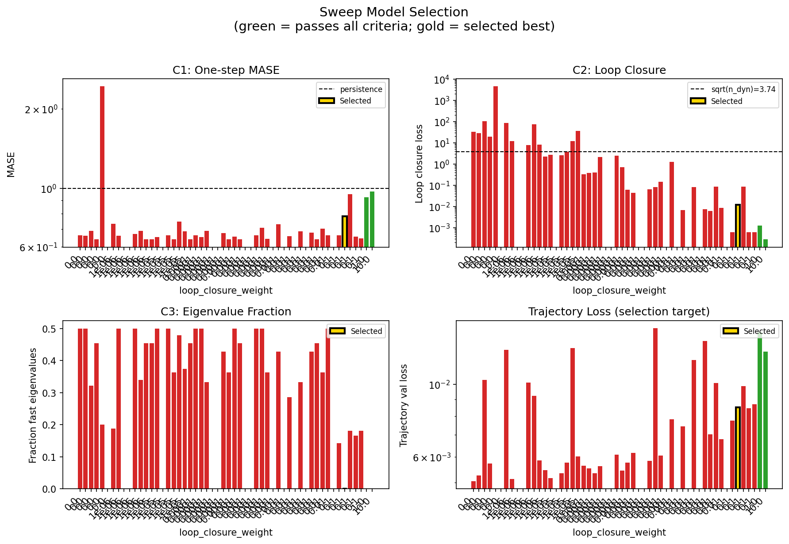
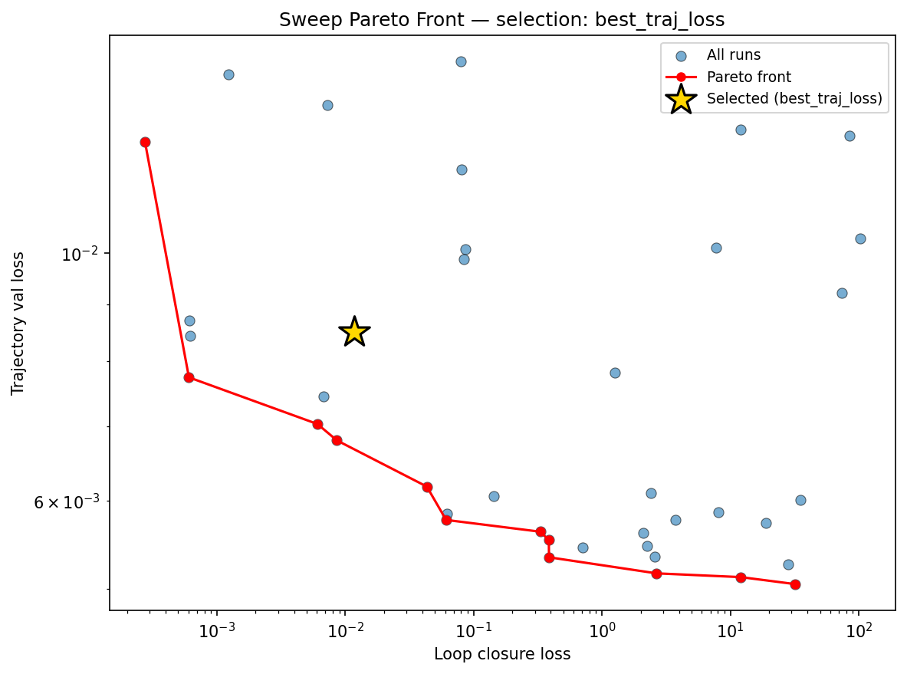
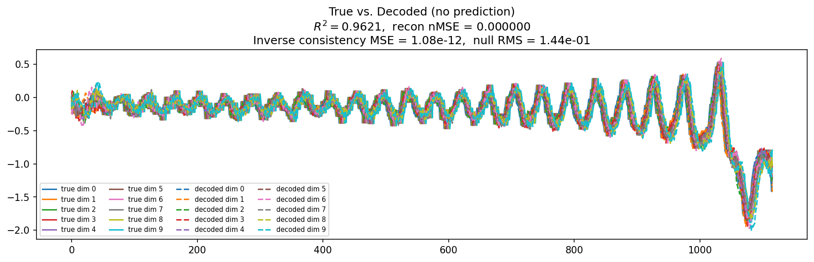
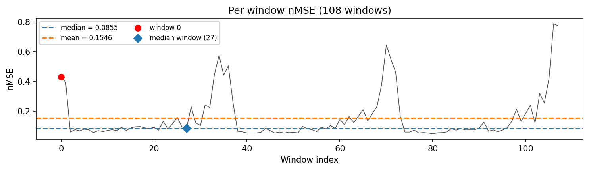
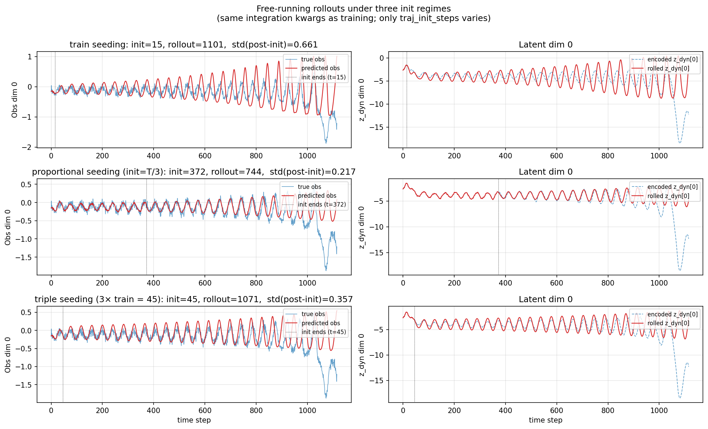
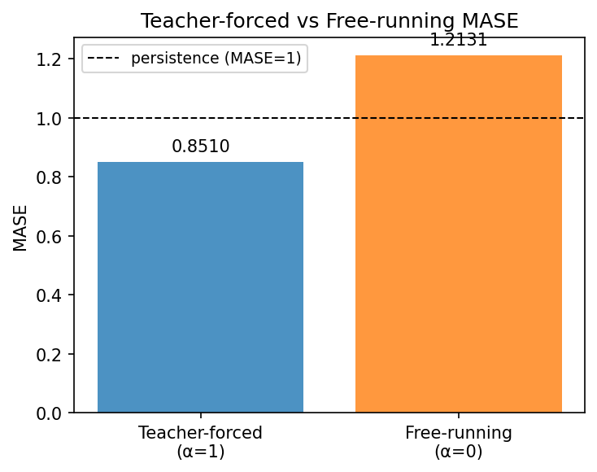
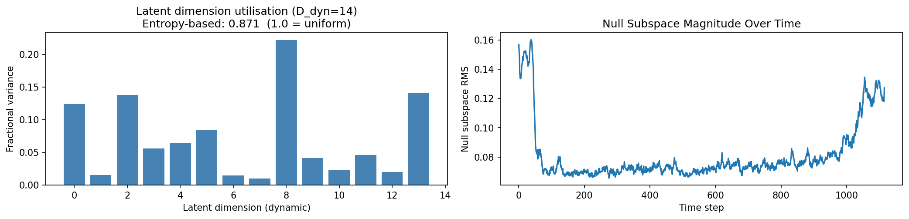
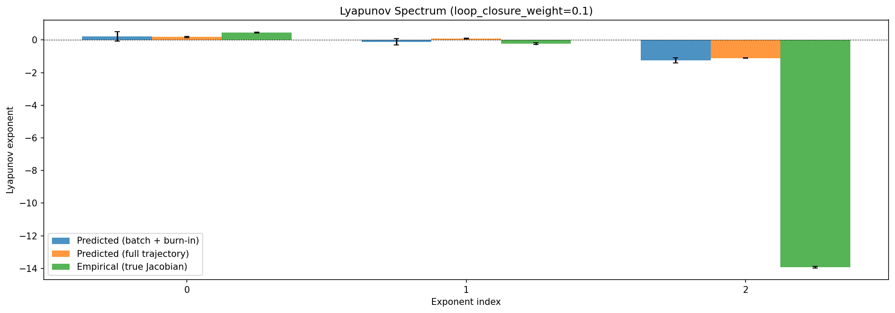
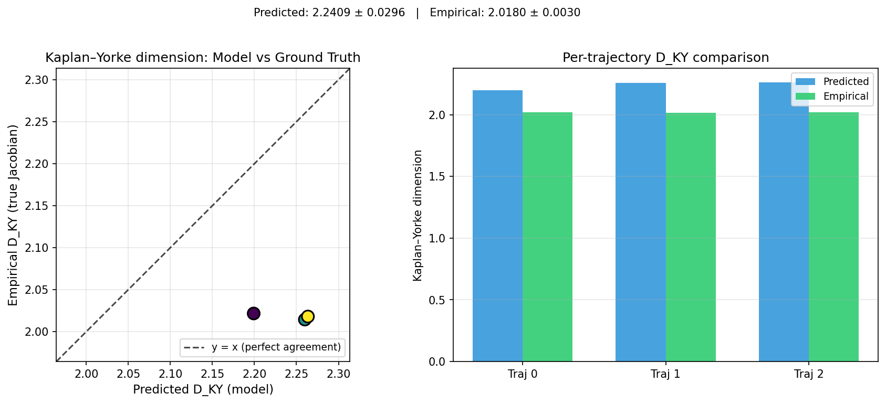


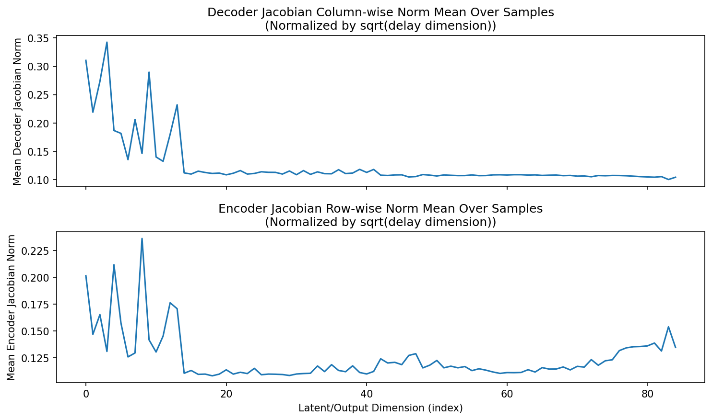
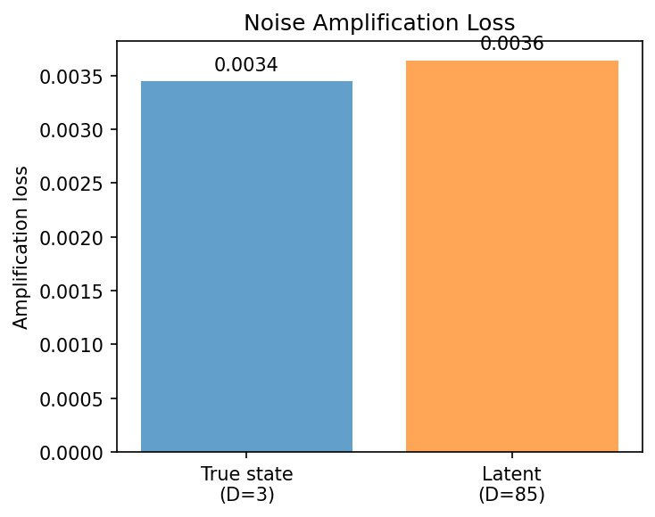

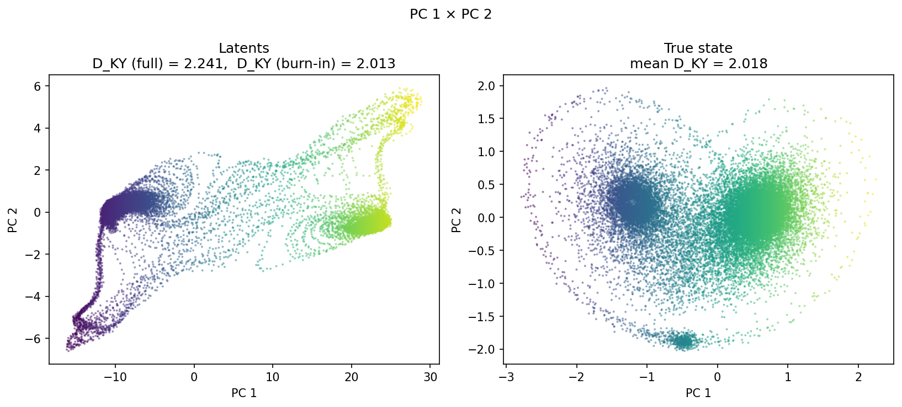
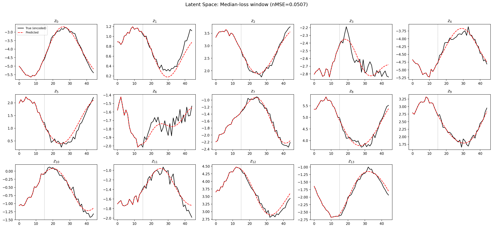
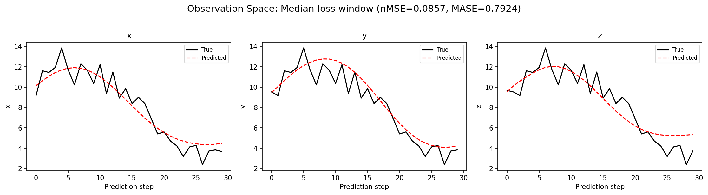
(to be written)
run_analytics stdoutrun_analyticsNo run_id provided — selecting best run from group 'lorenz_partial_additive_splitmode_p30_obsnoise005_cayley_autodim_top3nd_v2__lc_obsnoisescale_sweep_20260503T045452Z__stage_b' ...
Found 54 total runs in JacobianODE/Lorenz_INDpartial_NDsweep_cayley_autodim_D1_NormTrue__JacobianODE (group=lorenz_partial_additive_splitmode_p30_obsnoise005_cayley_autodim_top3nd_v2__lc_obsnoisescale_sweep_20260503T045452Z__stage_b)
All runs (state, loop_closure_weight, tangent_entropy_weight, kl_dyn_weight):
bqily7cx: state=crashed, lc=1e-05, te=0.0, kl_dyn=0.0
p8o0xqw4: state=finished, lc=1e-06, te=0.0, kl_dyn=0.0
sskpxk5g: state=crashed, lc=1e-06, te=0.0, kl_dyn=0.0
0ew7quhf: state=crashed, lc=0.0, te=0.0, kl_dyn=0.0
7t1nn4f9: state=finished, lc=0.0, te=0.0, kl_dyn=0.0
hm5mu4jp: state=crashed, lc=1e-05, te=0.0, kl_dyn=0.0
3u1igjv7: state=crashed, lc=1e-06, te=0.0, kl_dyn=0.0
3jsrpg9i: state=finished, lc=1e-06, te=0.0, kl_dyn=0.0
tee5b6pr: state=finished, lc=1e-05, te=0.0, kl_dyn=0.0
urnd3a1t: state=crashed, lc=1e-05, te=0.0, kl_dyn=0.0
uee2kb22: state=crashed, lc=0.0001, te=0.0, kl_dyn=0.0
1dcg8yzx: state=crashed, lc=0.0001, te=0.0, kl_dyn=0.0
50tuf37g: state=crashed, lc=0.0001, te=0.0, kl_dyn=0.0
mt2b1l8y: state=finished, lc=0.0, te=0.0, kl_dyn=0.0
7vbgsua8: state=crashed, lc=0.001, te=0.0, kl_dyn=0.0
db6w4w0x: state=crashed, lc=1e-05, te=0.0, kl_dyn=0.0
rpxypp2e: state=finished, lc=1e-05, te=0.0, kl_dyn=0.0
u4snumwg: state=crashed, lc=0.001, te=0.0, kl_dyn=0.0
2zpbe6q2: state=crashed, lc=0.0001, te=0.0, kl_dyn=0.0
lsh57ek8: state=crashed, lc=0.001, te=0.0, kl_dyn=0.0
7l8sz9za: state=crashed, lc=0.01, te=0.0, kl_dyn=0.0
m268tv5i: state=finished, lc=0.0, te=0.0, kl_dyn=0.0
vepkytu2: state=finished, lc=1e-06, te=0.0, kl_dyn=0.0
f83bxnmc: state=crashed, lc=0.001, te=0.0, kl_dyn=0.0
743e81hu: state=crashed, lc=0.0001, te=0.0, kl_dyn=0.0
601fkiof: state=finished, lc=0.0, te=0.0, kl_dyn=0.0
vnd51t40: state=crashed, lc=0.0001, te=0.0, kl_dyn=0.0
pdww2su4: state=finished, lc=0.01, te=0.0, kl_dyn=0.0
y5wxaf8u: state=crashed, lc=0.01, te=0.0, kl_dyn=0.0
qkmdphwn: state=crashed, lc=0.01, te=0.0, kl_dyn=0.0
qmz8kl51: state=crashed, lc=0.01, te=0.0, kl_dyn=0.0
as44dcuz: state=finished, lc=0.01, te=0.0, kl_dyn=0.0
jgrje8p7: state=finished, lc=1e-06, te=0.0, kl_dyn=0.0
odrl2rgg: state=finished, lc=0.001, te=0.0, kl_dyn=0.0
a4g0k3nw: state=finished, lc=0.001, te=0.0, kl_dyn=0.0
by3y7iqz: state=finished, lc=0.001, te=0.0, kl_dyn=0.0
o1knlzpw: state=finished, lc=0.0001, te=0.0, kl_dyn=0.0
4ou5c9nd: state=finished, lc=0.01, te=0.0, kl_dyn=0.0
v40vle4m: state=finished, lc=0.0, te=0.0, kl_dyn=0.0
h27br3mt: state=finished, lc=1e-05, te=0.0, kl_dyn=0.0
8d9kl89j: state=finished, lc=0.01, te=0.0, kl_dyn=0.0
dujgjwpo: state=finished, lc=0.01, te=0.0, kl_dyn=0.0
ikhwywnf: state=crashed, lc=1.0, te=0.0, kl_dyn=0.0
9cqwq46q: state=finished, lc=0.0001, te=0.0, kl_dyn=0.0
8zxwob7f: state=crashed, lc=0.1, te=0.0, kl_dyn=0.0
wm4sawrt: state=crashed, lc=0.1, te=0.0, kl_dyn=0.0
7ns5r5dr: state=finished, lc=0.1, te=0.0, kl_dyn=0.0
9fl25efz: state=crashed, lc=0.1, te=0.0, kl_dyn=0.0
awtrxkzp: state=crashed, lc=0.1, te=0.0, kl_dyn=0.0
511uijl4: state=crashed, lc=10.0, te=0.0, kl_dyn=0.0
ucotnnva: state=crashed, lc=0.1, te=0.0, kl_dyn=0.0
mzneds6h: state=finished, lc=1e-06, te=0.0, kl_dyn=0.0
9t9wui86: state=finished, lc=0.001, te=0.0, kl_dyn=0.0
i8wgdlq0: state=finished, lc=0.001, te=0.0, kl_dyn=0.0
slurm_timeout_min not found in any run config — falling back to 180 min
Including bqily7cx (lc=1e-05): use_all_runs=True (state=crashed)
Including p8o0xqw4 (lc=1e-06): use_all_runs=True (state=finished)
Including sskpxk5g (lc=1e-06): use_all_runs=True (state=crashed)
Including 0ew7quhf (lc=0.0): use_all_runs=True (state=crashed)
Including 7t1nn4f9 (lc=0.0): use_all_runs=True (state=finished)
Including hm5mu4jp (lc=1e-05): use_all_runs=True (state=crashed)
Including 3u1igjv7 (lc=1e-06): use_all_runs=True (state=crashed)
Including 3jsrpg9i (lc=1e-06): use_all_runs=True (state=finished)
Including tee5b6pr (lc=1e-05): use_all_runs=True (state=finished)
Including urnd3a1t (lc=1e-05): use_all_runs=True (state=crashed)
Including uee2kb22 (lc=0.0001): use_all_runs=True (state=crashed)
Including 1dcg8yzx (lc=0.0001): use_all_runs=True (state=crashed)
Including 50tuf37g (lc=0.0001): use_all_runs=True (state=crashed)
Including mt2b1l8y (lc=0.0): use_all_runs=True (state=finished)
Including 7vbgsua8 (lc=0.001): use_all_runs=True (state=crashed)
Including db6w4w0x (lc=1e-05): use_all_runs=True (state=crashed)
Including rpxypp2e (lc=1e-05): use_all_runs=True (state=finished)
Including u4snumwg (lc=0.001): use_all_runs=True (state=crashed)
Including 2zpbe6q2 (lc=0.0001): use_all_runs=True (state=crashed)
Including lsh57ek8 (lc=0.001): use_all_runs=True (state=crashed)
Including 7l8sz9za (lc=0.01): use_all_runs=True (state=crashed)
Including m268tv5i (lc=0.0): use_all_runs=True (state=finished)
Including vepkytu2 (lc=1e-06): use_all_runs=True (state=finished)
Including f83bxnmc (lc=0.001): use_all_runs=True (state=crashed)
Including 743e81hu (lc=0.0001): use_all_runs=True (state=crashed)
Including 601fkiof (lc=0.0): use_all_runs=True (state=finished)
Including vnd51t40 (lc=0.0001): use_all_runs=True (state=crashed)
Including pdww2su4 (lc=0.01): use_all_runs=True (state=finished)
Including y5wxaf8u (lc=0.01): use_all_runs=True (state=crashed)
Including qkmdphwn (lc=0.01): use_all_runs=True (state=crashed)
Including qmz8kl51 (lc=0.01): use_all_runs=True (state=crashed)
Including as44dcuz (lc=0.01): use_all_runs=True (state=finished)
Including jgrje8p7 (lc=1e-06): use_all_runs=True (state=finished)
Including odrl2rgg (lc=0.001): use_all_runs=True (state=finished)
Including a4g0k3nw (lc=0.001): use_all_runs=True (state=finished)
Including by3y7iqz (lc=0.001): use_all_runs=True (state=finished)
Including o1knlzpw (lc=0.0001): use_all_runs=True (state=finished)
Including 4ou5c9nd (lc=0.01): use_all_runs=True (state=finished)
Including v40vle4m (lc=0.0): use_all_runs=True (state=finished)
Including h27br3mt (lc=1e-05): use_all_runs=True (state=finished)
Including 8d9kl89j (lc=0.01): use_all_runs=True (state=finished)
Including dujgjwpo (lc=0.01): use_all_runs=True (state=finished)
Including ikhwywnf (lc=1.0): use_all_runs=True (state=crashed)
Including 9cqwq46q (lc=0.0001): use_all_runs=True (state=finished)
Including 8zxwob7f (lc=0.1): use_all_runs=True (state=crashed)
Including wm4sawrt (lc=0.1): use_all_runs=True (state=crashed)
Including 7ns5r5dr (lc=0.1): use_all_runs=True (state=finished)
Including 9fl25efz (lc=0.1): use_all_runs=True (state=crashed)
Including awtrxkzp (lc=0.1): use_all_runs=True (state=crashed)
Including 511uijl4 (lc=10.0): use_all_runs=True (state=crashed)
Including ucotnnva (lc=0.1): use_all_runs=True (state=crashed)
Including mzneds6h (lc=1e-06): use_all_runs=True (state=finished)
Including 9t9wui86 (lc=0.001): use_all_runs=True (state=finished)
Including i8wgdlq0 (lc=0.001): use_all_runs=True (state=finished)
Found 54 effectively-done sweep runs:
loop_closure_weight=0.0, tangent_entropy_weight=0.0, kl_dyn_weight=0.0 -> run_id=0ew7quhf
loop_closure_weight=0.0, tangent_entropy_weight=0.0, kl_dyn_weight=0.0 -> run_id=601fkiof
loop_closure_weight=0.0, tangent_entropy_weight=0.0, kl_dyn_weight=0.0 -> run_id=7t1nn4f9
loop_closure_weight=0.0, tangent_entropy_weight=0.0, kl_dyn_weight=0.0 -> run_id=m268tv5i
loop_closure_weight=0.0, tangent_entropy_weight=0.0, kl_dyn_weight=0.0 -> run_id=mt2b1l8y
loop_closure_weight=0.0, tangent_entropy_weight=0.0, kl_dyn_weight=0.0 -> run_id=v40vle4m
loop_closure_weight=1e-06, tangent_entropy_weight=0.0, kl_dyn_weight=0.0 -> run_id=3jsrpg9i
loop_closure_weight=1e-06, tangent_entropy_weight=0.0, kl_dyn_weight=0.0 -> run_id=3u1igjv7
loop_closure_weight=1e-06, tangent_entropy_weight=0.0, kl_dyn_weight=0.0 -> run_id=jgrje8p7
loop_closure_weight=1e-06, tangent_entropy_weight=0.0, kl_dyn_weight=0.0 -> run_id=mzneds6h
loop_closure_weight=1e-06, tangent_entropy_weight=0.0, kl_dyn_weight=0.0 -> run_id=p8o0xqw4
loop_closure_weight=1e-06, tangent_entropy_weight=0.0, kl_dyn_weight=0.0 -> run_id=sskpxk5g
loop_closure_weight=1e-06, tangent_entropy_weight=0.0, kl_dyn_weight=0.0 -> run_id=vepkytu2
loop_closure_weight=1e-05, tangent_entropy_weight=0.0, kl_dyn_weight=0.0 -> run_id=bqily7cx
loop_closure_weight=1e-05, tangent_entropy_weight=0.0, kl_dyn_weight=0.0 -> run_id=db6w4w0x
loop_closure_weight=1e-05, tangent_entropy_weight=0.0, kl_dyn_weight=0.0 -> run_id=h27br3mt
loop_closure_weight=1e-05, tangent_entropy_weight=0.0, kl_dyn_weight=0.0 -> run_id=hm5mu4jp
loop_closure_weight=1e-05, tangent_entropy_weight=0.0, kl_dyn_weight=0.0 -> run_id=rpxypp2e
loop_closure_weight=1e-05, tangent_entropy_weight=0.0, kl_dyn_weight=0.0 -> run_id=tee5b6pr
loop_closure_weight=1e-05, tangent_entropy_weight=0.0, kl_dyn_weight=0.0 -> run_id=urnd3a1t
loop_closure_weight=0.0001, tangent_entropy_weight=0.0, kl_dyn_weight=0.0 -> run_id=1dcg8yzx
loop_closure_weight=0.0001, tangent_entropy_weight=0.0, kl_dyn_weight=0.0 -> run_id=2zpbe6q2
loop_closure_weight=0.0001, tangent_entropy_weight=0.0, kl_dyn_weight=0.0 -> run_id=50tuf37g
loop_closure_weight=0.0001, tangent_entropy_weight=0.0, kl_dyn_weight=0.0 -> run_id=743e81hu
loop_closure_weight=0.0001, tangent_entropy_weight=0.0, kl_dyn_weight=0.0 -> run_id=9cqwq46q
loop_closure_weight=0.0001, tangent_entropy_weight=0.0, kl_dyn_weight=0.0 -> run_id=o1knlzpw
loop_closure_weight=0.0001, tangent_entropy_weight=0.0, kl_dyn_weight=0.0 -> run_id=uee2kb22
loop_closure_weight=0.0001, tangent_entropy_weight=0.0, kl_dyn_weight=0.0 -> run_id=vnd51t40
loop_closure_weight=0.001, tangent_entropy_weight=0.0, kl_dyn_weight=0.0 -> run_id=7vbgsua8
loop_closure_weight=0.001, tangent_entropy_weight=0.0, kl_dyn_weight=0.0 -> run_id=9t9wui86
loop_closure_weight=0.001, tangent_entropy_weight=0.0, kl_dyn_weight=0.0 -> run_id=a4g0k3nw
loop_closure_weight=0.001, tangent_entropy_weight=0.0, kl_dyn_weight=0.0 -> run_id=by3y7iqz
loop_closure_weight=0.001, tangent_entropy_weight=0.0, kl_dyn_weight=0.0 -> run_id=f83bxnmc
loop_closure_weight=0.001, tangent_entropy_weight=0.0, kl_dyn_weight=0.0 -> run_id=i8wgdlq0
loop_closure_weight=0.001, tangent_entropy_weight=0.0, kl_dyn_weight=0.0 -> run_id=lsh57ek8
loop_closure_weight=0.001, tangent_entropy_weight=0.0, kl_dyn_weight=0.0 -> run_id=odrl2rgg
loop_closure_weight=0.001, tangent_entropy_weight=0.0, kl_dyn_weight=0.0 -> run_id=u4snumwg
loop_closure_weight=0.01, tangent_entropy_weight=0.0, kl_dyn_weight=0.0 -> run_id=4ou5c9nd
loop_closure_weight=0.01, tangent_entropy_weight=0.0, kl_dyn_weight=0.0 -> run_id=7l8sz9za
loop_closure_weight=0.01, tangent_entropy_weight=0.0, kl_dyn_weight=0.0 -> run_id=8d9kl89j
loop_closure_weight=0.01, tangent_entropy_weight=0.0, kl_dyn_weight=0.0 -> run_id=as44dcuz
loop_closure_weight=0.01, tangent_entropy_weight=0.0, kl_dyn_weight=0.0 -> run_id=dujgjwpo
loop_closure_weight=0.01, tangent_entropy_weight=0.0, kl_dyn_weight=0.0 -> run_id=pdww2su4
loop_closure_weight=0.01, tangent_entropy_weight=0.0, kl_dyn_weight=0.0 -> run_id=qkmdphwn
loop_closure_weight=0.01, tangent_entropy_weight=0.0, kl_dyn_weight=0.0 -> run_id=qmz8kl51
loop_closure_weight=0.01, tangent_entropy_weight=0.0, kl_dyn_weight=0.0 -> run_id=y5wxaf8u
loop_closure_weight=0.1, tangent_entropy_weight=0.0, kl_dyn_weight=0.0 -> run_id=7ns5r5dr
loop_closure_weight=0.1, tangent_entropy_weight=0.0, kl_dyn_weight=0.0 -> run_id=8zxwob7f
loop_closure_weight=0.1, tangent_entropy_weight=0.0, kl_dyn_weight=0.0 -> run_id=9fl25efz
loop_closure_weight=0.1, tangent_entropy_weight=0.0, kl_dyn_weight=0.0 -> run_id=awtrxkzp
loop_closure_weight=0.1, tangent_entropy_weight=0.0, kl_dyn_weight=0.0 -> run_id=ucotnnva
loop_closure_weight=0.1, tangent_entropy_weight=0.0, kl_dyn_weight=0.0 -> run_id=wm4sawrt
loop_closure_weight=1.0, tangent_entropy_weight=0.0, kl_dyn_weight=0.0 -> run_id=ikhwywnf
loop_closure_weight=10.0, tangent_entropy_weight=0.0, kl_dyn_weight=0.0 -> run_id=511uijl4
n_dims=85, n_latent=85, n_dyn=14, dt=0.0150
run=0ew7quhf: DiagnosticMetrics(one_step_mase=0.6619001626968384, loop_closure_loss=32.14540481567383, fast_eigenvalue_fraction=0.5, trajectory_val_loss=0.005052566062659025) (from cache, n_batches=100)
run=601fkiof: DiagnosticMetrics(one_step_mase=0.6592473983764648, loop_closure_loss=28.197553634643555, fast_eigenvalue_fraction=0.5, trajectory_val_loss=0.005261473823338747) (from cache, n_batches=100)
run=7t1nn4f9: DiagnosticMetrics(one_step_mase=0.6887404918670654, loop_closure_loss=102.18049621582031, fast_eigenvalue_fraction=0.3214285671710968, trajectory_val_loss=0.010298551060259342) (from cache, n_batches=100)
run=m268tv5i: DiagnosticMetrics(one_step_mase=0.6407605409622192, loop_closure_loss=18.990741729736328, fast_eigenvalue_fraction=0.4545454680919647, trajectory_val_loss=0.005730538163334131) (from cache, n_batches=100)
run=mt2b1l8y: DiagnosticMetrics(one_step_mase=2.433638514095008, loop_closure_loss=4516.410163574219, fast_eigenvalue_fraction=0.20088425925925926, trajectory_val_loss=nan) (from cache, n_batches=100)
run=v40vle4m: DiagnosticMetrics(one_step_mase=nan, loop_closure_loss=nan, fast_eigenvalue_fraction=0.0, trajectory_val_loss=nan) (from cache, n_batches=100)
run=3jsrpg9i: DiagnosticMetrics(one_step_mase=0.7320995926856995, loop_closure_loss=84.53040313720703, fast_eigenvalue_fraction=0.1875, trajectory_val_loss=0.012736393138766289) (from cache, n_batches=100)
run=3u1igjv7: DiagnosticMetrics(one_step_mase=0.6607595086097717, loop_closure_loss=12.055047988891602, fast_eigenvalue_fraction=0.5, trajectory_val_loss=0.005126327741891146) (from cache, n_batches=100)
run=jgrje8p7: DiagnosticMetrics(one_step_mase=nan, loop_closure_loss=nan, fast_eigenvalue_fraction=0.0, trajectory_val_loss=nan) (from cache, n_batches=100)
run=mzneds6h: DiagnosticMetrics(one_step_mase=nan, loop_closure_loss=nan, fast_eigenvalue_fraction=0.0, trajectory_val_loss=nan) (from cache, n_batches=100)
run=p8o0xqw4: DiagnosticMetrics(one_step_mase=0.6696556210517883, loop_closure_loss=7.702804088592529, fast_eigenvalue_fraction=0.5, trajectory_val_loss=0.010107534937560558) (from cache, n_batches=100)
run=sskpxk5g: DiagnosticMetrics(one_step_mase=0.6884762048721313, loop_closure_loss=74.18224334716797, fast_eigenvalue_fraction=0.3392857015132904, trajectory_val_loss=0.009212481789290905) (from cache, n_batches=100)
run=vepkytu2: DiagnosticMetrics(one_step_mase=0.6406725645065308, loop_closure_loss=8.029727935791016, fast_eigenvalue_fraction=0.4545454680919647, trajectory_val_loss=0.005857246462255716) (from cache, n_batches=100)
run=bqily7cx: DiagnosticMetrics(one_step_mase=0.6404058337211609, loop_closure_loss=2.24114727973938, fast_eigenvalue_fraction=0.4545454680919647, trajectory_val_loss=0.00546645000576973) (from cache, n_batches=100)
run=db6w4w0x: DiagnosticMetrics(one_step_mase=0.6534757614135742, loop_closure_loss=2.6652743816375732, fast_eigenvalue_fraction=0.5, trajectory_val_loss=0.005166084039956331) (from cache, n_batches=100)
Loading run h27br3mt (16/54)
Loading checkpoint epoch=20-step=4200.ckpt...
Loading checkpoint epoch=20-step=4200.ckpt...
Computing diagnostics (100 batches)...
Cached to /orcd/data/ekmiller/001/eisenaj/JacobianODE/lightning/latent_jac_runs/diagnostics_cache/h27br3mt_n100.json
run=h27br3mt: DiagnosticMetrics(one_step_mase=nan, loop_closure_loss=nan, fast_eigenvalue_fraction=0.0, trajectory_val_loss=nan)
run=hm5mu4jp: DiagnosticMetrics(one_step_mase=0.6615885496139526, loop_closure_loss=2.593440055847168, fast_eigenvalue_fraction=0.5, trajectory_val_loss=0.005345338024199009) (from W&B history)
run=rpxypp2e: DiagnosticMetrics(one_step_mase=0.6405718922615051, loop_closure_loss=3.7544772624969482, fast_eigenvalue_fraction=0.3636363744735718, trajectory_val_loss=0.005764773115515709) (from W&B history)
run=tee5b6pr: DiagnosticMetrics(one_step_mase=0.7474859356880188, loop_closure_loss=11.992192268371582, fast_eigenvalue_fraction=0.4791666567325592, trajectory_val_loss=0.012898956425487995) (from W&B history)
run=urnd3a1t: DiagnosticMetrics(one_step_mase=0.6859975457191467, loop_closure_loss=35.22425842285156, fast_eigenvalue_fraction=0.375, trajectory_val_loss=0.006012548692524433) (from W&B history)
run=1dcg8yzx: DiagnosticMetrics(one_step_mase=0.6405085325241089, loop_closure_loss=0.3316112458705902, fast_eigenvalue_fraction=0.4545454680919647, trajectory_val_loss=0.005629196297377348) (from W&B history)
run=2zpbe6q2: DiagnosticMetrics(one_step_mase=0.6627455949783325, loop_closure_loss=0.3856922388076782, fast_eigenvalue_fraction=0.5, trajectory_val_loss=0.005532038398087025) (from W&B history)
run=50tuf37g: DiagnosticMetrics(one_step_mase=0.6535825729370117, loop_closure_loss=0.3871336877346039, fast_eigenvalue_fraction=0.5, trajectory_val_loss=0.0053403014317154884) (from W&B history)
run=743e81hu: DiagnosticMetrics(one_step_mase=0.6896141767501831, loop_closure_loss=2.084510564804077, fast_eigenvalue_fraction=0.3333333432674408, trajectory_val_loss=0.0056164502166211605) (from W&B history)
Loading run 9cqwq46q (25/54)
Loading checkpoint epoch=17-step=3600.ckpt...
Loading checkpoint epoch=17-step=3600.ckpt...
Computing diagnostics (100 batches)...
Cached to /orcd/data/ekmiller/001/eisenaj/JacobianODE/lightning/latent_jac_runs/diagnostics_cache/9cqwq46q_n100.json
run=9cqwq46q: DiagnosticMetrics(one_step_mase=nan, loop_closure_loss=nan, fast_eigenvalue_fraction=0.0, trajectory_val_loss=nan)
Loading run o1knlzpw (26/54)
Loading checkpoint epoch=17-step=3600.ckpt...
Loading checkpoint epoch=17-step=3600.ckpt...
Computing diagnostics (100 batches)...
Cached to /orcd/data/ekmiller/001/eisenaj/JacobianODE/lightning/latent_jac_runs/diagnostics_cache/o1knlzpw_n100.json
run=o1knlzpw: DiagnosticMetrics(one_step_mase=nan, loop_closure_loss=nan, fast_eigenvalue_fraction=0.0, trajectory_val_loss=nan)
run=uee2kb22: DiagnosticMetrics(one_step_mase=0.6769188642501831, loop_closure_loss=2.4131364822387695, fast_eigenvalue_fraction=0.4285714328289032, trajectory_val_loss=0.006100900936871767) (from W&B history)
run=vnd51t40: DiagnosticMetrics(one_step_mase=0.639272928237915, loop_closure_loss=0.7118913531303406, fast_eigenvalue_fraction=0.3636363744735718, trajectory_val_loss=0.005445728078484535) (from W&B history)
run=7vbgsua8: DiagnosticMetrics(one_step_mase=0.6545278429985046, loop_closure_loss=0.06114966794848442, fast_eigenvalue_fraction=0.5, trajectory_val_loss=0.005767705384641886) (from W&B history)
run=9t9wui86: DiagnosticMetrics(one_step_mase=0.6408931612968445, loop_closure_loss=0.04322938621044159, fast_eigenvalue_fraction=0.4545454680919647, trajectory_val_loss=0.006178502459079027) (from W&B history)
Loading run a4g0k3nw (31/54)
Loading checkpoint epoch=15-step=3200.ckpt...
Loading checkpoint epoch=15-step=3200.ckpt...
Computing diagnostics (100 batches)...
Cached to /orcd/data/ekmiller/001/eisenaj/JacobianODE/lightning/latent_jac_runs/diagnostics_cache/a4g0k3nw_n100.json
run=a4g0k3nw: DiagnosticMetrics(one_step_mase=nan, loop_closure_loss=nan, fast_eigenvalue_fraction=0.0, trajectory_val_loss=nan)
Loading run by3y7iqz (32/54)
Loading checkpoint epoch=15-step=3200.ckpt...
Loading checkpoint epoch=15-step=3200.ckpt...
Computing diagnostics (100 batches)...
Cached to /orcd/data/ekmiller/001/eisenaj/JacobianODE/lightning/latent_jac_runs/diagnostics_cache/by3y7iqz_n100.json
run=by3y7iqz: DiagnosticMetrics(one_step_mase=nan, loop_closure_loss=nan, fast_eigenvalue_fraction=0.0, trajectory_val_loss=nan)
run=f83bxnmc: DiagnosticMetrics(one_step_mase=0.6633754968643188, loop_closure_loss=0.06233280152082443, fast_eigenvalue_fraction=0.5, trajectory_val_loss=0.005840842146426439) (from W&B history)
run=i8wgdlq0: DiagnosticMetrics(one_step_mase=0.7076228857040405, loop_closure_loss=0.08001719415187836, fast_eigenvalue_fraction=0.5, trajectory_val_loss=0.01484011672437191) (from W&B history)
run=lsh57ek8: DiagnosticMetrics(one_step_mase=0.6418033242225647, loop_closure_loss=0.14458893239498138, fast_eigenvalue_fraction=0.3636363744735718, trajectory_val_loss=0.006061430089175701) (from W&B history)
Loading run odrl2rgg (36/54)
Loading checkpoint epoch=16-step=3400.ckpt...
Loading checkpoint epoch=16-step=3400.ckpt...
Computing diagnostics (100 batches)...
Cached to /orcd/data/ekmiller/001/eisenaj/JacobianODE/lightning/latent_jac_runs/diagnostics_cache/odrl2rgg_n100.json
run=odrl2rgg: DiagnosticMetrics(one_step_mase=nan, loop_closure_loss=nan, fast_eigenvalue_fraction=0.0, trajectory_val_loss=nan)
run=u4snumwg: DiagnosticMetrics(one_step_mase=0.7298907041549683, loop_closure_loss=1.2582032680511475, fast_eigenvalue_fraction=0.4285714328289032, trajectory_val_loss=0.007816347293555737) (from W&B history)
Loading run 4ou5c9nd (38/54)
Loading checkpoint epoch=17-step=3600.ckpt...
Loading checkpoint epoch=17-step=3600.ckpt...
Computing diagnostics (100 batches)...
Cached to /orcd/data/ekmiller/001/eisenaj/JacobianODE/lightning/latent_jac_runs/diagnostics_cache/4ou5c9nd_n100.json
run=4ou5c9nd: DiagnosticMetrics(one_step_mase=nan, loop_closure_loss=nan, fast_eigenvalue_fraction=0.0, trajectory_val_loss=nan)
run=7l8sz9za: DiagnosticMetrics(one_step_mase=0.657757580280304, loop_closure_loss=0.006780816707760096, fast_eigenvalue_fraction=0.2857142984867096, trajectory_val_loss=0.0074365693144500256) (from W&B history)
Loading run 8d9kl89j (40/54)
Loading checkpoint epoch=16-step=3400.ckpt...
Loading checkpoint epoch=16-step=3400.ckpt...
Computing diagnostics (100 batches)...
Cached to /orcd/data/ekmiller/001/eisenaj/JacobianODE/lightning/latent_jac_runs/diagnostics_cache/8d9kl89j_n100.json
run=8d9kl89j: DiagnosticMetrics(one_step_mase=nan, loop_closure_loss=nan, fast_eigenvalue_fraction=0.0, trajectory_val_loss=nan)
run=as44dcuz: DiagnosticMetrics(one_step_mase=0.6854671239852905, loop_closure_loss=0.08034011721611023, fast_eigenvalue_fraction=0.3333333432674408, trajectory_val_loss=0.01187878753989935) (from W&B history)
Loading run dujgjwpo (42/54)
Loading checkpoint epoch=15-step=3200.ckpt...
Loading checkpoint epoch=15-step=3200.ckpt...
Computing diagnostics (100 batches)...
Cached to /orcd/data/ekmiller/001/eisenaj/JacobianODE/lightning/latent_jac_runs/diagnostics_cache/dujgjwpo_n100.json
run=dujgjwpo: DiagnosticMetrics(one_step_mase=nan, loop_closure_loss=nan, fast_eigenvalue_fraction=0.0, trajectory_val_loss=nan)
run=pdww2su4: DiagnosticMetrics(one_step_mase=0.6781821846961975, loop_closure_loss=0.007301377598196268, fast_eigenvalue_fraction=0.4285714328289032, trajectory_val_loss=0.013573826290667057) (from W&B history)
run=qkmdphwn: DiagnosticMetrics(one_step_mase=0.639866292476654, loop_closure_loss=0.006074661388993263, fast_eigenvalue_fraction=0.4545454680919647, trajectory_val_loss=0.007029195316135883) (from W&B history)
run=qmz8kl51: DiagnosticMetrics(one_step_mase=0.7011627554893494, loop_closure_loss=0.0867115780711174, fast_eigenvalue_fraction=0.3636363744735718, trajectory_val_loss=0.010080477222800255) (from W&B history)
run=y5wxaf8u: DiagnosticMetrics(one_step_mase=0.6627702713012695, loop_closure_loss=0.00862347986549139, fast_eigenvalue_fraction=0.5, trajectory_val_loss=0.0067953551188111305) (from W&B history)
Loading run 7ns5r5dr (47/54)
Loading checkpoint epoch=16-step=3400.ckpt...
Loading checkpoint epoch=16-step=3400.ckpt...
Computing diagnostics (100 batches)...
Cached to /orcd/data/ekmiller/001/eisenaj/JacobianODE/lightning/latent_jac_runs/diagnostics_cache/7ns5r5dr_n100.json
run=7ns5r5dr: DiagnosticMetrics(one_step_mase=nan, loop_closure_loss=nan, fast_eigenvalue_fraction=0.0, trajectory_val_loss=nan)
run=8zxwob7f: DiagnosticMetrics(one_step_mase=0.661852240562439, loop_closure_loss=0.000606815330684185, fast_eigenvalue_fraction=0.1428571492433548, trajectory_val_loss=0.007738121319562197) (from W&B history)
run=9fl25efz: DiagnosticMetrics(one_step_mase=0.782496988773346, loop_closure_loss=0.011784915812313557, fast_eigenvalue_fraction=0.0, trajectory_val_loss=0.008501876145601273) (from W&B history)
run=awtrxkzp: DiagnosticMetrics(one_step_mase=0.9511085152626038, loop_closure_loss=0.08444013446569443, fast_eigenvalue_fraction=0.1818181872367859, trajectory_val_loss=0.009876144118607044) (from W&B history)
run=ucotnnva: DiagnosticMetrics(one_step_mase=0.654123067855835, loop_closure_loss=0.000618260120972991, fast_eigenvalue_fraction=0.1666666716337204, trajectory_val_loss=0.0084364740177989) (from W&B history)
run=wm4sawrt: DiagnosticMetrics(one_step_mase=0.6445437073707581, loop_closure_loss=0.0006145132356323302, fast_eigenvalue_fraction=0.1818181872367859, trajectory_val_loss=0.008694451302289963) (from W&B history)
run=ikhwywnf: DiagnosticMetrics(one_step_mase=0.9254789352416992, loop_closure_loss=0.0012294808402657509, fast_eigenvalue_fraction=0.0, trajectory_val_loss=0.014451664872467518) (from W&B history)
run=511uijl4: DiagnosticMetrics(one_step_mase=0.9721693992614746, loop_closure_loss=0.00027600006433203816, fast_eigenvalue_fraction=0.0, trajectory_val_loss=0.012571645900607109) (from W&B history)
Ranking method: best_traj_loss
Best run ID: 9fl25efz
Best loop_closure_weight: 0.1
Best tangent_entropy_weight: 0.0
Best kl_dyn_weight: 0.0
Best traj loss: 0.008502
Criteria applied: ['C1', 'C2', 'C3']
Surviving: 16 / 54
Auto-selected run_id: 9fl25efz
======================================================================
PARETO FRONTIER RUNS (12 runs)
======================================================================
Run ID LC Loss Traj Val Loss
------------ -------------- --------------
511uijl4 0.000276 0.012572
8zxwob7f 0.000607 0.007738
qkmdphwn 0.006075 0.007029
y5wxaf8u 0.008623 0.006795
9t9wui86 0.043229 0.006179
7vbgsua8 0.061150 0.005768
1dcg8yzx 0.331611 0.005629
2zpbe6q2 0.385692 0.005532
50tuf37g 0.387134 0.005340
db6w4w0x 2.665274 0.005166
3u1igjv7 12.055048 0.005126
0ew7quhf 32.145405 0.005053
======================================================================
RANKING METHOD COMPARISON (over 16 survivors)
======================================================================
Method Run ID LC Loss Traj Val Loss
---------------------- ------------ -------------- --------------
best_traj_loss 9fl25efz 0.011785 0.008502 <-- active
pareto_knee 511uijl4 0.000276 0.012572
geo_rank 511uijl4 0.000276 0.012572
minimax_rank 511uijl4 0.000276 0.012572
geo_log_score 9fl25efz 0.011785 0.008502
minimax_log_score 511uijl4 0.000276 0.012572
======================================================================
Loading run 9fl25efz from JacobianODE/Lorenz_INDpartial_NDsweep_cayley_autodim_D1_NormTrue__JacobianODE ...
Loading checkpoint epoch=127-step=25600.ckpt...
Train dataset shape: torch.Size([23562, 45, 85])
Validation dataset shape: torch.Size([7497, 45, 85])
Test dataset shape: torch.Size([3213, 45, 85])
Train trajectories dataset shape: torch.Size([22, 1116, 85])
Validation trajectories dataset shape: torch.Size([7, 1116, 85])
Test trajectories dataset shape: torch.Size([3, 1116, 85])
Loading checkpoint epoch=127-step=25600.ckpt...
Computing reconstruction ...
Computing MASE ...
Teacher-forced MASE: 0.8510
Free-running MASE: 1.2131
Computing latent utilization ...
Entropy-based utilization: 0.871
Null subspace mean RMS: 8.312923e-02
Computing Lyapunov exponents ...
Computing full-trajectory Lyapunov (3 test trajs, T=1116) ...
Predicted Lyapunov exponents (batch+burn-in, 128 windowed trajs):
λ_1 = +0.2205 ± 0.2852
λ_2 = -0.1104 ± 0.1900
λ_3 = -1.2446 ± 0.1543
λ_4 = -1.5212 ± 0.1367
λ_5 = -2.6703 ± 0.2638
λ_6 = -3.1901 ± 0.1961
λ_7 = -3.3248 ± 0.1419
λ_8 = -3.7092 ± 0.2161
λ_9 = -4.4906 ± 0.2062
λ_10 = -23.6835 ± 0.0167
λ_11 = -23.7960 ± 0.0213
λ_12 = -58.2566 ± 0.0663
λ_13 = -58.4462 ± 0.0851
λ_14 = -59.3572 ± 0.0844
Predicted Lyapunov exponents (full-length, 3 test trajs):
λ_1 = +0.1833 ± 0.0387
λ_2 = +0.0850 ± 0.0296
λ_3 = -1.1122 ± 0.0136
λ_4 = -1.1888 ± 0.0118
λ_5 = -3.0746 ± 0.0089
λ_6 = -3.1631 ± 0.0193
λ_7 = -3.2467 ± 0.0111
λ_8 = -3.8112 ± 0.0073
λ_9 = -4.1845 ± 0.0123
λ_10 = -23.8410 ± 0.0015
λ_11 = -23.8777 ± 0.0012
λ_12 = -58.2905 ± 0.0025
λ_13 = -58.3462 ± 0.0034
λ_14 = -59.9206 ± 0.0035
Empirical Lyapunov exponents (mean ± std):
λ_1 = +0.4677 ± 0.0259
λ_2 = -0.2173 ± 0.0549
λ_3 = -13.9174 ± 0.0513
Mean KY dim (predicted): 2.241 ± 0.030
Mean KY dim (empirical): 2.018 ± 0.003
Mean KY dim (burn-in): 2.013 ± 0.404
Computing prediction windows ...
Windows: 108 — nMSE min=0.0495, median=0.0855, mean=0.1546, max=0.7881
Computing long-trajectory free-running rollouts ...
Computing encoder/decoder Jacobians ...
encoder_jacobian: (128, 85, 85)
decoder_jacobian: (128, 85, 85)
Computing amplification loss ...
Amplification loss — True state: 0.003446
Amplification loss — Latent: 0.003641
Computing tangent space spectrum ...
tangent_spectrum failed: cusolver error: CUSOLVER_STATUS_INVALID_VALUE, when calling `cusolverDnSgesvdj(handle, jobz, econ, m, n, A, lda, S, U, ldu, V, ldv, work, lwork, info, params)`. This error may appear if the input matrix contains NaN. If you keep seeing this error, you may use `torch.backends.cuda.preferred_linalg_library()` to try linear algebra operators with other supported backends. See https://pytorch.org/docs/stable/backends.html#torch.backends.cuda.preferred_linalg_library
--- backfill 2026-05-03T21:26:25Z sections=['sweep_overview', 'reconstruction', 'mase', 'latent_utilization', 'lyapunov', 'kaplan_yorke', 'prediction_windows', 'prediction_detail', 'long_trajectory', 'encoder_decoder_jacobians', 'amplification', 'tangent_spectrum'] ---
No run_id provided — selecting best run from group 'lorenz_partial_additive_splitmode_p30_obsnoise005_cayley_autodim_top3nd_v2__lc_obsnoisescale_sweep_20260503T045452Z__stage_b' ...
Found 54 total runs in JacobianODE/Lorenz_INDpartial_NDsweep_cayley_autodim_D1_NormTrue__JacobianODE (group=lorenz_partial_additive_splitmode_p30_obsnoise005_cayley_autodim_top3nd_v2__lc_obsnoisescale_sweep_20260503T045452Z__stage_b)
All runs (state, loop_closure_weight, tangent_entropy_weight, kl_dyn_weight):
bqily7cx: state=crashed, lc=1e-05, te=0.0, kl_dyn=0.0
p8o0xqw4: state=finished, lc=1e-06, te=0.0, kl_dyn=0.0
sskpxk5g: state=crashed, lc=1e-06, te=0.0, kl_dyn=0.0
0ew7quhf: state=crashed, lc=0.0, te=0.0, kl_dyn=0.0
7t1nn4f9: state=finished, lc=0.0, te=0.0, kl_dyn=0.0
hm5mu4jp: state=crashed, lc=1e-05, te=0.0, kl_dyn=0.0
3u1igjv7: state=crashed, lc=1e-06, te=0.0, kl_dyn=0.0
3jsrpg9i: state=finished, lc=1e-06, te=0.0, kl_dyn=0.0
tee5b6pr: state=finished, lc=1e-05, te=0.0, kl_dyn=0.0
urnd3a1t: state=crashed, lc=1e-05, te=0.0, kl_dyn=0.0
uee2kb22: state=crashed, lc=0.0001, te=0.0, kl_dyn=0.0
1dcg8yzx: state=crashed, lc=0.0001, te=0.0, kl_dyn=0.0
50tuf37g: state=crashed, lc=0.0001, te=0.0, kl_dyn=0.0
mt2b1l8y: state=finished, lc=0.0, te=0.0, kl_dyn=0.0
7vbgsua8: state=crashed, lc=0.001, te=0.0, kl_dyn=0.0
db6w4w0x: state=crashed, lc=1e-05, te=0.0, kl_dyn=0.0
rpxypp2e: state=finished, lc=1e-05, te=0.0, kl_dyn=0.0
u4snumwg: state=crashed, lc=0.001, te=0.0, kl_dyn=0.0
2zpbe6q2: state=crashed, lc=0.0001, te=0.0, kl_dyn=0.0
lsh57ek8: state=crashed, lc=0.001, te=0.0, kl_dyn=0.0
7l8sz9za: state=crashed, lc=0.01, te=0.0, kl_dyn=0.0
m268tv5i: state=finished, lc=0.0, te=0.0, kl_dyn=0.0
vepkytu2: state=finished, lc=1e-06, te=0.0, kl_dyn=0.0
f83bxnmc: state=crashed, lc=0.001, te=0.0, kl_dyn=0.0
743e81hu: state=crashed, lc=0.0001, te=0.0, kl_dyn=0.0
601fkiof: state=finished, lc=0.0, te=0.0, kl_dyn=0.0
vnd51t40: state=crashed, lc=0.0001, te=0.0, kl_dyn=0.0
pdww2su4: state=finished, lc=0.01, te=0.0, kl_dyn=0.0
y5wxaf8u: state=crashed, lc=0.01, te=0.0, kl_dyn=0.0
qkmdphwn: state=crashed, lc=0.01, te=0.0, kl_dyn=0.0
qmz8kl51: state=crashed, lc=0.01, te=0.0, kl_dyn=0.0
as44dcuz: state=finished, lc=0.01, te=0.0, kl_dyn=0.0
jgrje8p7: state=finished, lc=1e-06, te=0.0, kl_dyn=0.0
odrl2rgg: state=finished, lc=0.001, te=0.0, kl_dyn=0.0
a4g0k3nw: state=finished, lc=0.001, te=0.0, kl_dyn=0.0
by3y7iqz: state=finished, lc=0.001, te=0.0, kl_dyn=0.0
o1knlzpw: state=finished, lc=0.0001, te=0.0, kl_dyn=0.0
4ou5c9nd: state=finished, lc=0.01, te=0.0, kl_dyn=0.0
v40vle4m: state=finished, lc=0.0, te=0.0, kl_dyn=0.0
h27br3mt: state=finished, lc=1e-05, te=0.0, kl_dyn=0.0
8d9kl89j: state=finished, lc=0.01, te=0.0, kl_dyn=0.0
dujgjwpo: state=finished, lc=0.01, te=0.0, kl_dyn=0.0
ikhwywnf: state=crashed, lc=1.0, te=0.0, kl_dyn=0.0
9cqwq46q: state=finished, lc=0.0001, te=0.0, kl_dyn=0.0
8zxwob7f: state=crashed, lc=0.1, te=0.0, kl_dyn=0.0
wm4sawrt: state=crashed, lc=0.1, te=0.0, kl_dyn=0.0
7ns5r5dr: state=finished, lc=0.1, te=0.0, kl_dyn=0.0
9fl25efz: state=crashed, lc=0.1, te=0.0, kl_dyn=0.0
awtrxkzp: state=crashed, lc=0.1, te=0.0, kl_dyn=0.0
511uijl4: state=crashed, lc=10.0, te=0.0, kl_dyn=0.0
ucotnnva: state=crashed, lc=0.1, te=0.0, kl_dyn=0.0
mzneds6h: state=finished, lc=1e-06, te=0.0, kl_dyn=0.0
9t9wui86: state=finished, lc=0.001, te=0.0, kl_dyn=0.0
i8wgdlq0: state=finished, lc=0.001, te=0.0, kl_dyn=0.0
slurm_timeout_min not found in any run config — falling back to 180 min
Including bqily7cx (lc=1e-05): use_all_runs=True (state=crashed)
Including p8o0xqw4 (lc=1e-06): use_all_runs=True (state=finished)
Including sskpxk5g (lc=1e-06): use_all_runs=True (state=crashed)
Including 0ew7quhf (lc=0.0): use_all_runs=True (state=crashed)
Including 7t1nn4f9 (lc=0.0): use_all_runs=True (state=finished)
Including hm5mu4jp (lc=1e-05): use_all_runs=True (state=crashed)
Including 3u1igjv7 (lc=1e-06): use_all_runs=True (state=crashed)
Including 3jsrpg9i (lc=1e-06): use_all_runs=True (state=finished)
Including tee5b6pr (lc=1e-05): use_all_runs=True (state=finished)
Including urnd3a1t (lc=1e-05): use_all_runs=True (state=crashed)
Including uee2kb22 (lc=0.0001): use_all_runs=True (state=crashed)
Including 1dcg8yzx (lc=0.0001): use_all_runs=True (state=crashed)
Including 50tuf37g (lc=0.0001): use_all_runs=True (state=crashed)
Including mt2b1l8y (lc=0.0): use_all_runs=True (state=finished)
Including 7vbgsua8 (lc=0.001): use_all_runs=True (state=crashed)
Including db6w4w0x (lc=1e-05): use_all_runs=True (state=crashed)
Including rpxypp2e (lc=1e-05): use_all_runs=True (state=finished)
Including u4snumwg (lc=0.001): use_all_runs=True (state=crashed)
Including 2zpbe6q2 (lc=0.0001): use_all_runs=True (state=crashed)
Including lsh57ek8 (lc=0.001): use_all_runs=True (state=crashed)
Including 7l8sz9za (lc=0.01): use_all_runs=True (state=crashed)
Including m268tv5i (lc=0.0): use_all_runs=True (state=finished)
Including vepkytu2 (lc=1e-06): use_all_runs=True (state=finished)
Including f83bxnmc (lc=0.001): use_all_runs=True (state=crashed)
Including 743e81hu (lc=0.0001): use_all_runs=True (state=crashed)
Including 601fkiof (lc=0.0): use_all_runs=True (state=finished)
Including vnd51t40 (lc=0.0001): use_all_runs=True (state=crashed)
Including pdww2su4 (lc=0.01): use_all_runs=True (state=finished)
Including y5wxaf8u (lc=0.01): use_all_runs=True (state=crashed)
Including qkmdphwn (lc=0.01): use_all_runs=True (state=crashed)
Including qmz8kl51 (lc=0.01): use_all_runs=True (state=crashed)
Including as44dcuz (lc=0.01): use_all_runs=True (state=finished)
Including jgrje8p7 (lc=1e-06): use_all_runs=True (state=finished)
Including odrl2rgg (lc=0.001): use_all_runs=True (state=finished)
Including a4g0k3nw (lc=0.001): use_all_runs=True (state=finished)
Including by3y7iqz (lc=0.001): use_all_runs=True (state=finished)
Including o1knlzpw (lc=0.0001): use_all_runs=True (state=finished)
Including 4ou5c9nd (lc=0.01): use_all_runs=True (state=finished)
Including v40vle4m (lc=0.0): use_all_runs=True (state=finished)
Including h27br3mt (lc=1e-05): use_all_runs=True (state=finished)
Including 8d9kl89j (lc=0.01): use_all_runs=True (state=finished)
Including dujgjwpo (lc=0.01): use_all_runs=True (state=finished)
Including ikhwywnf (lc=1.0): use_all_runs=True (state=crashed)
Including 9cqwq46q (lc=0.0001): use_all_runs=True (state=finished)
Including 8zxwob7f (lc=0.1): use_all_runs=True (state=crashed)
Including wm4sawrt (lc=0.1): use_all_runs=True (state=crashed)
Including 7ns5r5dr (lc=0.1): use_all_runs=True (state=finished)
Including 9fl25efz (lc=0.1): use_all_runs=True (state=crashed)
Including awtrxkzp (lc=0.1): use_all_runs=True (state=crashed)
Including 511uijl4 (lc=10.0): use_all_runs=True (state=crashed)
Including ucotnnva (lc=0.1): use_all_runs=True (state=crashed)
Including mzneds6h (lc=1e-06): use_all_runs=True (state=finished)
Including 9t9wui86 (lc=0.001): use_all_runs=True (state=finished)
Including i8wgdlq0 (lc=0.001): use_all_runs=True (state=finished)
Found 54 effectively-done sweep runs:
loop_closure_weight=0.0, tangent_entropy_weight=0.0, kl_dyn_weight=0.0 -> run_id=0ew7quhf
loop_closure_weight=0.0, tangent_entropy_weight=0.0, kl_dyn_weight=0.0 -> run_id=601fkiof
loop_closure_weight=0.0, tangent_entropy_weight=0.0, kl_dyn_weight=0.0 -> run_id=7t1nn4f9
loop_closure_weight=0.0, tangent_entropy_weight=0.0, kl_dyn_weight=0.0 -> run_id=m268tv5i
loop_closure_weight=0.0, tangent_entropy_weight=0.0, kl_dyn_weight=0.0 -> run_id=mt2b1l8y
loop_closure_weight=0.0, tangent_entropy_weight=0.0, kl_dyn_weight=0.0 -> run_id=v40vle4m
loop_closure_weight=1e-06, tangent_entropy_weight=0.0, kl_dyn_weight=0.0 -> run_id=3jsrpg9i
loop_closure_weight=1e-06, tangent_entropy_weight=0.0, kl_dyn_weight=0.0 -> run_id=3u1igjv7
loop_closure_weight=1e-06, tangent_entropy_weight=0.0, kl_dyn_weight=0.0 -> run_id=jgrje8p7
loop_closure_weight=1e-06, tangent_entropy_weight=0.0, kl_dyn_weight=0.0 -> run_id=mzneds6h
loop_closure_weight=1e-06, tangent_entropy_weight=0.0, kl_dyn_weight=0.0 -> run_id=p8o0xqw4
loop_closure_weight=1e-06, tangent_entropy_weight=0.0, kl_dyn_weight=0.0 -> run_id=sskpxk5g
loop_closure_weight=1e-06, tangent_entropy_weight=0.0, kl_dyn_weight=0.0 -> run_id=vepkytu2
loop_closure_weight=1e-05, tangent_entropy_weight=0.0, kl_dyn_weight=0.0 -> run_id=bqily7cx
loop_closure_weight=1e-05, tangent_entropy_weight=0.0, kl_dyn_weight=0.0 -> run_id=db6w4w0x
loop_closure_weight=1e-05, tangent_entropy_weight=0.0, kl_dyn_weight=0.0 -> run_id=h27br3mt
loop_closure_weight=1e-05, tangent_entropy_weight=0.0, kl_dyn_weight=0.0 -> run_id=hm5mu4jp
loop_closure_weight=1e-05, tangent_entropy_weight=0.0, kl_dyn_weight=0.0 -> run_id=rpxypp2e
loop_closure_weight=1e-05, tangent_entropy_weight=0.0, kl_dyn_weight=0.0 -> run_id=tee5b6pr
loop_closure_weight=1e-05, tangent_entropy_weight=0.0, kl_dyn_weight=0.0 -> run_id=urnd3a1t
loop_closure_weight=0.0001, tangent_entropy_weight=0.0, kl_dyn_weight=0.0 -> run_id=1dcg8yzx
loop_closure_weight=0.0001, tangent_entropy_weight=0.0, kl_dyn_weight=0.0 -> run_id=2zpbe6q2
loop_closure_weight=0.0001, tangent_entropy_weight=0.0, kl_dyn_weight=0.0 -> run_id=50tuf37g
loop_closure_weight=0.0001, tangent_entropy_weight=0.0, kl_dyn_weight=0.0 -> run_id=743e81hu
loop_closure_weight=0.0001, tangent_entropy_weight=0.0, kl_dyn_weight=0.0 -> run_id=9cqwq46q
loop_closure_weight=0.0001, tangent_entropy_weight=0.0, kl_dyn_weight=0.0 -> run_id=o1knlzpw
loop_closure_weight=0.0001, tangent_entropy_weight=0.0, kl_dyn_weight=0.0 -> run_id=uee2kb22
loop_closure_weight=0.0001, tangent_entropy_weight=0.0, kl_dyn_weight=0.0 -> run_id=vnd51t40
loop_closure_weight=0.001, tangent_entropy_weight=0.0, kl_dyn_weight=0.0 -> run_id=7vbgsua8
loop_closure_weight=0.001, tangent_entropy_weight=0.0, kl_dyn_weight=0.0 -> run_id=9t9wui86
loop_closure_weight=0.001, tangent_entropy_weight=0.0, kl_dyn_weight=0.0 -> run_id=a4g0k3nw
loop_closure_weight=0.001, tangent_entropy_weight=0.0, kl_dyn_weight=0.0 -> run_id=by3y7iqz
loop_closure_weight=0.001, tangent_entropy_weight=0.0, kl_dyn_weight=0.0 -> run_id=f83bxnmc
loop_closure_weight=0.001, tangent_entropy_weight=0.0, kl_dyn_weight=0.0 -> run_id=i8wgdlq0
loop_closure_weight=0.001, tangent_entropy_weight=0.0, kl_dyn_weight=0.0 -> run_id=lsh57ek8
loop_closure_weight=0.001, tangent_entropy_weight=0.0, kl_dyn_weight=0.0 -> run_id=odrl2rgg
loop_closure_weight=0.001, tangent_entropy_weight=0.0, kl_dyn_weight=0.0 -> run_id=u4snumwg
loop_closure_weight=0.01, tangent_entropy_weight=0.0, kl_dyn_weight=0.0 -> run_id=4ou5c9nd
loop_closure_weight=0.01, tangent_entropy_weight=0.0, kl_dyn_weight=0.0 -> run_id=7l8sz9za
loop_closure_weight=0.01, tangent_entropy_weight=0.0, kl_dyn_weight=0.0 -> run_id=8d9kl89j
loop_closure_weight=0.01, tangent_entropy_weight=0.0, kl_dyn_weight=0.0 -> run_id=as44dcuz
loop_closure_weight=0.01, tangent_entropy_weight=0.0, kl_dyn_weight=0.0 -> run_id=dujgjwpo
loop_closure_weight=0.01, tangent_entropy_weight=0.0, kl_dyn_weight=0.0 -> run_id=pdww2su4
loop_closure_weight=0.01, tangent_entropy_weight=0.0, kl_dyn_weight=0.0 -> run_id=qkmdphwn
loop_closure_weight=0.01, tangent_entropy_weight=0.0, kl_dyn_weight=0.0 -> run_id=qmz8kl51
loop_closure_weight=0.01, tangent_entropy_weight=0.0, kl_dyn_weight=0.0 -> run_id=y5wxaf8u
loop_closure_weight=0.1, tangent_entropy_weight=0.0, kl_dyn_weight=0.0 -> run_id=7ns5r5dr
loop_closure_weight=0.1, tangent_entropy_weight=0.0, kl_dyn_weight=0.0 -> run_id=8zxwob7f
loop_closure_weight=0.1, tangent_entropy_weight=0.0, kl_dyn_weight=0.0 -> run_id=9fl25efz
loop_closure_weight=0.1, tangent_entropy_weight=0.0, kl_dyn_weight=0.0 -> run_id=awtrxkzp
loop_closure_weight=0.1, tangent_entropy_weight=0.0, kl_dyn_weight=0.0 -> run_id=ucotnnva
loop_closure_weight=0.1, tangent_entropy_weight=0.0, kl_dyn_weight=0.0 -> run_id=wm4sawrt
loop_closure_weight=1.0, tangent_entropy_weight=0.0, kl_dyn_weight=0.0 -> run_id=ikhwywnf
loop_closure_weight=10.0, tangent_entropy_weight=0.0, kl_dyn_weight=0.0 -> run_id=511uijl4
n_dims=85, n_latent=85, n_dyn=14, dt=0.0150
run=0ew7quhf: DiagnosticMetrics(one_step_mase=0.6619001626968384, loop_closure_loss=32.14540481567383, fast_eigenvalue_fraction=0.5, trajectory_val_loss=0.005052566062659025) (from cache, n_batches=100)
run=601fkiof: DiagnosticMetrics(one_step_mase=0.6592473983764648, loop_closure_loss=28.197553634643555, fast_eigenvalue_fraction=0.5, trajectory_val_loss=0.005261473823338747) (from cache, n_batches=100)
run=7t1nn4f9: DiagnosticMetrics(one_step_mase=0.6887404918670654, loop_closure_loss=102.18049621582031, fast_eigenvalue_fraction=0.3214285671710968, trajectory_val_loss=0.010298551060259342) (from cache, n_batches=100)
run=m268tv5i: DiagnosticMetrics(one_step_mase=0.6407605409622192, loop_closure_loss=18.990741729736328, fast_eigenvalue_fraction=0.4545454680919647, trajectory_val_loss=0.005730538163334131) (from cache, n_batches=100)
run=mt2b1l8y: DiagnosticMetrics(one_step_mase=2.433638514095008, loop_closure_loss=4516.410163574219, fast_eigenvalue_fraction=0.20088425925925926, trajectory_val_loss=nan) (from cache, n_batches=100)
run=v40vle4m: DiagnosticMetrics(one_step_mase=nan, loop_closure_loss=nan, fast_eigenvalue_fraction=0.0, trajectory_val_loss=nan) (from cache, n_batches=100)
run=3jsrpg9i: DiagnosticMetrics(one_step_mase=0.7320995926856995, loop_closure_loss=84.53040313720703, fast_eigenvalue_fraction=0.1875, trajectory_val_loss=0.012736393138766289) (from cache, n_batches=100)
run=3u1igjv7: DiagnosticMetrics(one_step_mase=0.6607595086097717, loop_closure_loss=12.055047988891602, fast_eigenvalue_fraction=0.5, trajectory_val_loss=0.005126327741891146) (from cache, n_batches=100)
run=jgrje8p7: DiagnosticMetrics(one_step_mase=nan, loop_closure_loss=nan, fast_eigenvalue_fraction=0.0, trajectory_val_loss=nan) (from cache, n_batches=100)
run=mzneds6h: DiagnosticMetrics(one_step_mase=nan, loop_closure_loss=nan, fast_eigenvalue_fraction=0.0, trajectory_val_loss=nan) (from cache, n_batches=100)
run=p8o0xqw4: DiagnosticMetrics(one_step_mase=0.6696556210517883, loop_closure_loss=7.702804088592529, fast_eigenvalue_fraction=0.5, trajectory_val_loss=0.010107534937560558) (from cache, n_batches=100)
run=sskpxk5g: DiagnosticMetrics(one_step_mase=0.6884762048721313, loop_closure_loss=74.18224334716797, fast_eigenvalue_fraction=0.3392857015132904, trajectory_val_loss=0.009212481789290905) (from cache, n_batches=100)
run=vepkytu2: DiagnosticMetrics(one_step_mase=0.6406725645065308, loop_closure_loss=8.029727935791016, fast_eigenvalue_fraction=0.4545454680919647, trajectory_val_loss=0.005857246462255716) (from cache, n_batches=100)
run=bqily7cx: DiagnosticMetrics(one_step_mase=0.6404058337211609, loop_closure_loss=2.24114727973938, fast_eigenvalue_fraction=0.4545454680919647, trajectory_val_loss=0.00546645000576973) (from cache, n_batches=100)
run=db6w4w0x: DiagnosticMetrics(one_step_mase=0.6534757614135742, loop_closure_loss=2.6652743816375732, fast_eigenvalue_fraction=0.5, trajectory_val_loss=0.005166084039956331) (from cache, n_batches=100)
Loading run h27br3mt (16/54)
Loading checkpoint epoch=20-step=4200.ckpt...
Loading checkpoint epoch=20-step=4200.ckpt...
Computing diagnostics (100 batches)...
Cached to /orcd/data/ekmiller/001/eisenaj/JacobianODE/lightning/latent_jac_runs/diagnostics_cache/h27br3mt_n100.json
run=h27br3mt: DiagnosticMetrics(one_step_mase=nan, loop_closure_loss=nan, fast_eigenvalue_fraction=0.0, trajectory_val_loss=nan)
run=hm5mu4jp: DiagnosticMetrics(one_step_mase=0.6615885496139526, loop_closure_loss=2.593440055847168, fast_eigenvalue_fraction=0.5, trajectory_val_loss=0.005345338024199009) (from W&B history)
run=rpxypp2e: DiagnosticMetrics(one_step_mase=0.6405718922615051, loop_closure_loss=3.7544772624969482, fast_eigenvalue_fraction=0.3636363744735718, trajectory_val_loss=0.005764773115515709) (from W&B history)
run=tee5b6pr: DiagnosticMetrics(one_step_mase=0.7474859356880188, loop_closure_loss=11.992192268371582, fast_eigenvalue_fraction=0.4791666567325592, trajectory_val_loss=0.012898956425487995) (from W&B history)
run=urnd3a1t: DiagnosticMetrics(one_step_mase=0.6859975457191467, loop_closure_loss=35.22425842285156, fast_eigenvalue_fraction=0.375, trajectory_val_loss=0.006012548692524433) (from W&B history)
run=1dcg8yzx: DiagnosticMetrics(one_step_mase=0.6405085325241089, loop_closure_loss=0.3316112458705902, fast_eigenvalue_fraction=0.4545454680919647, trajectory_val_loss=0.005629196297377348) (from W&B history)
run=2zpbe6q2: DiagnosticMetrics(one_step_mase=0.6627455949783325, loop_closure_loss=0.3856922388076782, fast_eigenvalue_fraction=0.5, trajectory_val_loss=0.005532038398087025) (from W&B history)
run=50tuf37g: DiagnosticMetrics(one_step_mase=0.6535825729370117, loop_closure_loss=0.3871336877346039, fast_eigenvalue_fraction=0.5, trajectory_val_loss=0.0053403014317154884) (from W&B history)
run=743e81hu: DiagnosticMetrics(one_step_mase=0.6896141767501831, loop_closure_loss=2.084510564804077, fast_eigenvalue_fraction=0.3333333432674408, trajectory_val_loss=0.0056164502166211605) (from W&B history)
Loading run 9cqwq46q (25/54)
Loading checkpoint epoch=17-step=3600.ckpt...
Loading checkpoint epoch=17-step=3600.ckpt...
Computing diagnostics (100 batches)...
Cached to /orcd/data/ekmiller/001/eisenaj/JacobianODE/lightning/latent_jac_runs/diagnostics_cache/9cqwq46q_n100.json
run=9cqwq46q: DiagnosticMetrics(one_step_mase=nan, loop_closure_loss=nan, fast_eigenvalue_fraction=0.0, trajectory_val_loss=nan)
Loading run o1knlzpw (26/54)
Loading checkpoint epoch=17-step=3600.ckpt...
Loading checkpoint epoch=17-step=3600.ckpt...
Computing diagnostics (100 batches)...
Cached to /orcd/data/ekmiller/001/eisenaj/JacobianODE/lightning/latent_jac_runs/diagnostics_cache/o1knlzpw_n100.json
run=o1knlzpw: DiagnosticMetrics(one_step_mase=nan, loop_closure_loss=nan, fast_eigenvalue_fraction=0.0, trajectory_val_loss=nan)
run=uee2kb22: DiagnosticMetrics(one_step_mase=0.6769188642501831, loop_closure_loss=2.4131364822387695, fast_eigenvalue_fraction=0.4285714328289032, trajectory_val_loss=0.006100900936871767) (from W&B history)
run=vnd51t40: DiagnosticMetrics(one_step_mase=0.639272928237915, loop_closure_loss=0.7118913531303406, fast_eigenvalue_fraction=0.3636363744735718, trajectory_val_loss=0.005445728078484535) (from W&B history)
run=7vbgsua8: DiagnosticMetrics(one_step_mase=0.6545278429985046, loop_closure_loss=0.06114966794848442, fast_eigenvalue_fraction=0.5, trajectory_val_loss=0.005767705384641886) (from W&B history)
run=9t9wui86: DiagnosticMetrics(one_step_mase=0.6408931612968445, loop_closure_loss=0.04322938621044159, fast_eigenvalue_fraction=0.4545454680919647, trajectory_val_loss=0.006178502459079027) (from W&B history)
Loading run a4g0k3nw (31/54)
Loading checkpoint epoch=15-step=3200.ckpt...
Loading checkpoint epoch=15-step=3200.ckpt...
Computing diagnostics (100 batches)...
Cached to /orcd/data/ekmiller/001/eisenaj/JacobianODE/lightning/latent_jac_runs/diagnostics_cache/a4g0k3nw_n100.json
run=a4g0k3nw: DiagnosticMetrics(one_step_mase=nan, loop_closure_loss=nan, fast_eigenvalue_fraction=0.0, trajectory_val_loss=nan)
Loading run by3y7iqz (32/54)
Loading checkpoint epoch=15-step=3200.ckpt...
Loading checkpoint epoch=15-step=3200.ckpt...
Computing diagnostics (100 batches)...
Cached to /orcd/data/ekmiller/001/eisenaj/JacobianODE/lightning/latent_jac_runs/diagnostics_cache/by3y7iqz_n100.json
run=by3y7iqz: DiagnosticMetrics(one_step_mase=nan, loop_closure_loss=nan, fast_eigenvalue_fraction=0.0, trajectory_val_loss=nan)
run=f83bxnmc: DiagnosticMetrics(one_step_mase=0.6633754968643188, loop_closure_loss=0.06233280152082443, fast_eigenvalue_fraction=0.5, trajectory_val_loss=0.005840842146426439) (from W&B history)
run=i8wgdlq0: DiagnosticMetrics(one_step_mase=0.7076228857040405, loop_closure_loss=0.08001719415187836, fast_eigenvalue_fraction=0.5, trajectory_val_loss=0.01484011672437191) (from W&B history)
run=lsh57ek8: DiagnosticMetrics(one_step_mase=0.6418033242225647, loop_closure_loss=0.14458893239498138, fast_eigenvalue_fraction=0.3636363744735718, trajectory_val_loss=0.006061430089175701) (from W&B history)
Loading run odrl2rgg (36/54)
Loading checkpoint epoch=16-step=3400.ckpt...
Loading checkpoint epoch=16-step=3400.ckpt...
Computing diagnostics (100 batches)...
Cached to /orcd/data/ekmiller/001/eisenaj/JacobianODE/lightning/latent_jac_runs/diagnostics_cache/odrl2rgg_n100.json
run=odrl2rgg: DiagnosticMetrics(one_step_mase=nan, loop_closure_loss=nan, fast_eigenvalue_fraction=0.0, trajectory_val_loss=nan)
run=u4snumwg: DiagnosticMetrics(one_step_mase=0.7298907041549683, loop_closure_loss=1.2582032680511475, fast_eigenvalue_fraction=0.4285714328289032, trajectory_val_loss=0.007816347293555737) (from W&B history)
Loading run 4ou5c9nd (38/54)
Loading checkpoint epoch=17-step=3600.ckpt...
Loading checkpoint epoch=17-step=3600.ckpt...
Computing diagnostics (100 batches)...
Cached to /orcd/data/ekmiller/001/eisenaj/JacobianODE/lightning/latent_jac_runs/diagnostics_cache/4ou5c9nd_n100.json
run=4ou5c9nd: DiagnosticMetrics(one_step_mase=nan, loop_closure_loss=nan, fast_eigenvalue_fraction=0.0, trajectory_val_loss=nan)
run=7l8sz9za: DiagnosticMetrics(one_step_mase=0.657757580280304, loop_closure_loss=0.006780816707760096, fast_eigenvalue_fraction=0.2857142984867096, trajectory_val_loss=0.0074365693144500256) (from W&B history)
Loading run 8d9kl89j (40/54)
Loading checkpoint epoch=16-step=3400.ckpt...
Loading checkpoint epoch=16-step=3400.ckpt...
Computing diagnostics (100 batches)...
Cached to /orcd/data/ekmiller/001/eisenaj/JacobianODE/lightning/latent_jac_runs/diagnostics_cache/8d9kl89j_n100.json
run=8d9kl89j: DiagnosticMetrics(one_step_mase=nan, loop_closure_loss=nan, fast_eigenvalue_fraction=0.0, trajectory_val_loss=nan)
run=as44dcuz: DiagnosticMetrics(one_step_mase=0.6854671239852905, loop_closure_loss=0.08034011721611023, fast_eigenvalue_fraction=0.3333333432674408, trajectory_val_loss=0.01187878753989935) (from W&B history)
Loading run dujgjwpo (42/54)
Loading checkpoint epoch=15-step=3200.ckpt...
Loading checkpoint epoch=15-step=3200.ckpt...
Computing diagnostics (100 batches)...
Cached to /orcd/data/ekmiller/001/eisenaj/JacobianODE/lightning/latent_jac_runs/diagnostics_cache/dujgjwpo_n100.json
run=dujgjwpo: DiagnosticMetrics(one_step_mase=nan, loop_closure_loss=nan, fast_eigenvalue_fraction=0.0, trajectory_val_loss=nan)
run=pdww2su4: DiagnosticMetrics(one_step_mase=0.6781821846961975, loop_closure_loss=0.007301377598196268, fast_eigenvalue_fraction=0.4285714328289032, trajectory_val_loss=0.013573826290667057) (from W&B history)
run=qkmdphwn: DiagnosticMetrics(one_step_mase=0.639866292476654, loop_closure_loss=0.006074661388993263, fast_eigenvalue_fraction=0.4545454680919647, trajectory_val_loss=0.007029195316135883) (from W&B history)
run=qmz8kl51: DiagnosticMetrics(one_step_mase=0.7011627554893494, loop_closure_loss=0.0867115780711174, fast_eigenvalue_fraction=0.3636363744735718, trajectory_val_loss=0.010080477222800255) (from W&B history)
run=y5wxaf8u: DiagnosticMetrics(one_step_mase=0.6627702713012695, loop_closure_loss=0.00862347986549139, fast_eigenvalue_fraction=0.5, trajectory_val_loss=0.0067953551188111305) (from W&B history)
Loading run 7ns5r5dr (47/54)
Loading checkpoint epoch=16-step=3400.ckpt...
Loading checkpoint epoch=16-step=3400.ckpt...
Computing diagnostics (100 batches)...
Cached to /orcd/data/ekmiller/001/eisenaj/JacobianODE/lightning/latent_jac_runs/diagnostics_cache/7ns5r5dr_n100.json
run=7ns5r5dr: DiagnosticMetrics(one_step_mase=nan, loop_closure_loss=nan, fast_eigenvalue_fraction=0.0, trajectory_val_loss=nan)
run=8zxwob7f: DiagnosticMetrics(one_step_mase=0.661852240562439, loop_closure_loss=0.000606815330684185, fast_eigenvalue_fraction=0.1428571492433548, trajectory_val_loss=0.007738121319562197) (from W&B history)
run=9fl25efz: DiagnosticMetrics(one_step_mase=0.782496988773346, loop_closure_loss=0.011784915812313557, fast_eigenvalue_fraction=0.0, trajectory_val_loss=0.008501876145601273) (from W&B history)
run=awtrxkzp: DiagnosticMetrics(one_step_mase=0.9511085152626038, loop_closure_loss=0.08444013446569443, fast_eigenvalue_fraction=0.1818181872367859, trajectory_val_loss=0.009876144118607044) (from W&B history)
run=ucotnnva: DiagnosticMetrics(one_step_mase=0.654123067855835, loop_closure_loss=0.000618260120972991, fast_eigenvalue_fraction=0.1666666716337204, trajectory_val_loss=0.0084364740177989) (from W&B history)
run=wm4sawrt: DiagnosticMetrics(one_step_mase=0.6445437073707581, loop_closure_loss=0.0006145132356323302, fast_eigenvalue_fraction=0.1818181872367859, trajectory_val_loss=0.008694451302289963) (from W&B history)
run=ikhwywnf: DiagnosticMetrics(one_step_mase=0.9254789352416992, loop_closure_loss=0.0012294808402657509, fast_eigenvalue_fraction=0.0, trajectory_val_loss=0.014451664872467518) (from W&B history)
run=511uijl4: DiagnosticMetrics(one_step_mase=0.9721693992614746, loop_closure_loss=0.00027600006433203816, fast_eigenvalue_fraction=0.0, trajectory_val_loss=0.012571645900607109) (from W&B history)
Ranking method: best_traj_loss
Best run ID: 9fl25efz
Best loop_closure_weight: 0.1
Best tangent_entropy_weight: 0.0
Best kl_dyn_weight: 0.0
Best traj loss: 0.008502
Criteria applied: ['C1', 'C2', 'C3']
Surviving: 16 / 54
Auto-selected run_id: 9fl25efz
======================================================================
PARETO FRONTIER RUNS (12 runs)
======================================================================
Run ID LC Loss Traj Val Loss
------------ -------------- --------------
511uijl4 0.000276 0.012572
8zxwob7f 0.000607 0.007738
qkmdphwn 0.006075 0.007029
y5wxaf8u 0.008623 0.006795
9t9wui86 0.043229 0.006179
7vbgsua8 0.061150 0.005768
1dcg8yzx 0.331611 0.005629
2zpbe6q2 0.385692 0.005532
50tuf37g 0.387134 0.005340
db6w4w0x 2.665274 0.005166
3u1igjv7 12.055048 0.005126
0ew7quhf 32.145405 0.005053
======================================================================
RANKING METHOD COMPARISON (over 16 survivors)
======================================================================
Method Run ID LC Loss Traj Val Loss
---------------------- ------------ -------------- --------------
best_traj_loss 9fl25efz 0.011785 0.008502 <-- active
pareto_knee 511uijl4 0.000276 0.012572
geo_rank 511uijl4 0.000276 0.012572
minimax_rank 511uijl4 0.000276 0.012572
geo_log_score 9fl25efz 0.011785 0.008502
minimax_log_score 511uijl4 0.000276 0.012572
======================================================================
Loading run 9fl25efz from JacobianODE/Lorenz_INDpartial_NDsweep_cayley_autodim_D1_NormTrue__JacobianODE ...
Loading checkpoint epoch=127-step=25600.ckpt...
Train dataset shape: torch.Size([23562, 45, 85])
Validation dataset shape: torch.Size([7497, 45, 85])
Test dataset shape: torch.Size([3213, 45, 85])
Train trajectories dataset shape: torch.Size([22, 1116, 85])
Validation trajectories dataset shape: torch.Size([7, 1116, 85])
Test trajectories dataset shape: torch.Size([3, 1116, 85])
Loading checkpoint epoch=127-step=25600.ckpt...
Computing reconstruction ...
Computing MASE ...
Teacher-forced MASE: 0.8510
Free-running MASE: 1.2131
Computing latent utilization ...
Entropy-based utilization: 0.871
Null subspace mean RMS: 8.312923e-02
Computing Lyapunov exponents ...
Computing full-trajectory Lyapunov (3 test trajs, T=1116) ...
Predicted Lyapunov exponents (batch+burn-in, 128 windowed trajs):
λ_1 = +0.2205 ± 0.2852
λ_2 = -0.1104 ± 0.1900
λ_3 = -1.2446 ± 0.1543
λ_4 = -1.5212 ± 0.1367
λ_5 = -2.6703 ± 0.2638
λ_6 = -3.1901 ± 0.1961
λ_7 = -3.3248 ± 0.1419
λ_8 = -3.7092 ± 0.2161
λ_9 = -4.4906 ± 0.2062
λ_10 = -23.6835 ± 0.0167
λ_11 = -23.7960 ± 0.0213
λ_12 = -58.2566 ± 0.0663
λ_13 = -58.4462 ± 0.0851
λ_14 = -59.3572 ± 0.0844
Predicted Lyapunov exponents (full-length, 3 test trajs):
λ_1 = +0.1833 ± 0.0387
λ_2 = +0.0850 ± 0.0296
λ_3 = -1.1122 ± 0.0136
λ_4 = -1.1888 ± 0.0118
λ_5 = -3.0746 ± 0.0089
λ_6 = -3.1631 ± 0.0193
λ_7 = -3.2467 ± 0.0111
λ_8 = -3.8112 ± 0.0073
λ_9 = -4.1845 ± 0.0123
λ_10 = -23.8410 ± 0.0015
λ_11 = -23.8777 ± 0.0012
λ_12 = -58.2905 ± 0.0025
λ_13 = -58.3462 ± 0.0034
λ_14 = -59.9206 ± 0.0035
Empirical Lyapunov exponents (mean ± std):
λ_1 = +0.4677 ± 0.0259
λ_2 = -0.2173 ± 0.0549
λ_3 = -13.9174 ± 0.0513
Mean KY dim (predicted): 2.241 ± 0.030
Mean KY dim (empirical): 2.018 ± 0.003
Mean KY dim (burn-in): 2.013 ± 0.404
Computing prediction windows ...
Windows: 108 — nMSE min=0.0495, median=0.0855, mean=0.1546, m
... (log truncated — see run_analytics.log for full output)